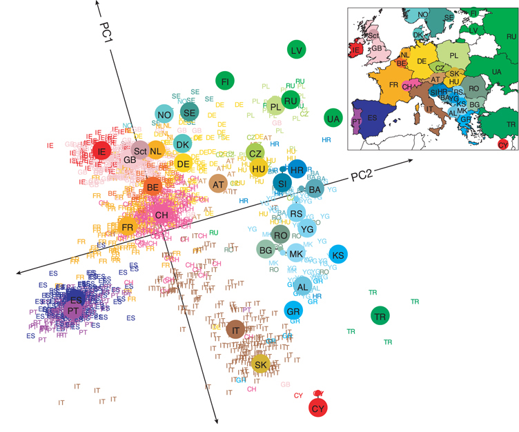

library(slendr)
init_env()
# <replace this with `population()` definitions like in the slides>
# <replace this with your gene-flow definition in variable `gf`>
model <- compile_model(
populations = list(...), # <put your list of populations here>
gene_flow = gf,
generation_time = 30
)Simulations with slendr
Installation and setup
The easiest way to set up everything on your computer is to download all of the book materials (text, code, data, everything) to your machine by following these steps:
Clone the repository with the course materials. In a shell terminal on Linux or macOS, in your home directory (or anywhere else, really) you can run:
$ git clone https://github.com/bodkan/simgen ~/simgen
(For Windows users only: You should be able to do all of this on Windows too, but that would require you having some kind of Linux environment (terminal, R, etc.) already set up. Unfortunately I don’t know much about that so my recommendation is that, if you do use Windows, just do the exercises on the cloud instance provided by the course organizers.)
- Install all R package dependencies by going into the activity repository directory you just cloned and installing the necessary R packages by following these steps:
First go into the project directory you just cloned:
$ cd ~/simgenOpen the R terminal in that directory. You should get a note that the renv package is being automatically setup, like this:
$ R [... R startup information stuff ...] # Bootstrapping renv 1.0.11 -------------------------------------------------- - Downloading renv ... OK - Installing renv ... OK - Project '~/simgen' loaded. [renv 1.0.11] - One or more packages recorded in the lockfile are not installed. - Use `renv::status()` for more details.Install R package dependencies (still in the R console!):
> renv::restore(prompt = FALSE)Set up the Python environment used by the slendr R package for simulation and tree-sequence analysis (still in the R console!):
> slendr::setup_env(agree = TRUE)If everything worked, you should get an optimistic message saying:
====================================================================== Python environment for slendr has been successfuly created, and the R interface to msprime, tskit, and pyslim modules has been activated. In future sessions, activate this environment by calling init_env(). =======================================================================
- Open the repository directory in RStudio (on your laptop if you cloned the repository there, or in your browser if you’re using the provided cloud instance) and navigate to the book repository directory via
File -> Open Project...in the RStudio menu, opening thesimgen.Rprojfile.
If the setup_env() installation procedure fails, try the following:
- Delete the failed installation attempt:
slendr::clear_env(force = TRUE, all = TRUE)- Try installing it again, this time using
pipas a Python installation method (the default iscondawhich unfortunately fails fairly often):
slendr::setup_env(agree = TRUE, pip = TRUE)Organization of the exercises
For each exercise, you will get a brief explanation of the problem at hand and some information about functions that could be useful to solve the exercise. The concrete, specific task will be always written like this in bold. As you work on each part of each exercises, look for these bold lines.
Your goal for each exercise is to write a complete R script script (in RStudio File -> New file -> R script). I suggest you save the script for each exercise as exercise1.R, exercise2.R, etc., just to keep things tidy and easy to troubleshoot if needed.
Each exercise is composed of individual parts, which are designed to build one upon the other in the order they are specified. As you progress through sequential parts of each exercise, you will be adding code to your script for that exercise.
Note on the programming aspect of the exercises
All the exercises will involve “real coding”! If you’ve never really programmed entire scripts before, this could feel a little intimidating. Don’t worry. If you’re ever lost, just take a peek at the solutions which are (by default hidden) under each exercise part. Always try to work on a solution on your own, but never let this be a barrier to your progress. Feel free to copy-paste bits of my solutions into your own scripts.
If you find yourself totally lost, don’t hesitate to read my solutions from the get go, copy-pasting them into your own script in the RStudio, executing them line by line, and trying to understand what’s going on. It’s the understanding that we’re after here. Whether or not you can implement everything yourself from scratch does not actually matter at all. (Nobody in history has learned to program from scratch. Everyone started by copy-pasting code examples written by someone else. So feel free to do the same!)
Programming demographic models with slendr
Part 1: Building a demographic model in slendr
Use functions such as population(), gene_flow(), and compile_model(), which we discussed in the “crash course” at the start of this session, to program the following toy model of human demographic history in slendr. (Apologies for my bad handwriting and poor artistic ability.)

Note: You could easily program the model so that different ancestral populations are represented by separate population() commands (i.e., your model would start with a population called “human_chimp_ancestor” from which a “CHIMP” and “hominin_ancestor” populations would split at 6 Mya, etc.) but generally this is too annoying to do and requires too much code.
Feel free to write the model so that “CHIMP” is the first population, then “AFR” population splits from it at 6 Mya, etc… Although it probably isn’t the most accurate way to describe the real evolutionary history, it simplifies the coding significantly.
[Mya = million years ago; kya = thousand years ago]
Hint: Create a new script exercise1.R in your RStudio session using the following “template”. Then add a sequence of appropriate population() calls using the syntax from the introductory slides (using the parent = <pop> argument for programming splits of daughter populations – which will be all except the CHIMP lineage in our example), etc.
Note: With slendr you can specify time in whatever format is more convenient or readable for your model. For instance here, because we’re dealing with historical events which are commonly expressed in times given as”years ago”, we can write them in a decreasing order – i.e. 7Mya → 6Mya → …, as shown above – or, in terms of R code, 7e6 (or 7000000), 6e6 (6000000), etc.
In a later example, you will see that you can also encode the events in the time direction going “forward” (i.e., the first event starting in generation 1, a following event in generation 42, and so on).
Hint: Remember that slendr is designed with interactivity in mind! When you write a chunk of code (such as a command to create a population through a population split, or model compilation to create a model object), execute that bit of code in the R console and inspect the summary information printed by evaluating the respective R object you just created. You can either copy-pasted stuff from your script to the R console, or use a convenient RStudio shortcut like Ctrl+Enter (Linux and Windows), or Cmd+Enter (Mac).
Click to see the solution
library(slendr)
init_env()
## The interface to all required Python modules has been activated.
# Chimpanzee outgroup
chimp <- population("CHIMP", time = 7e6, N = 5000)
# Two populations of anatomically modern humans: Africans and Europeans
afr <- population("AFR", parent = chimp, time = 6e6, N = 15000)
eur <- population("EUR", parent = afr, time = 70e3, N = 3000)
# Neanderthal population splitting at 600 ky ago from modern humans
# (becomes extinct by 40 ky ago)
nea <- population("NEA", parent = afr, time = 600e3, N = 1000, remove = 40e3)
# Neanderthal introgression event (3% admixture between 55-50 kya)
gf <- gene_flow(from = nea, to = eur, rate = 0.03, start = 55000, end = 50000)
# Compile the entire model into a single slendr R object
model <- compile_model(
populations = list(chimp, nea, afr, eur),
gene_flow = gf,
generation_time = 30,
path = here::here("data/introgression"), # <--- don't worry about these two
overwrite = TRUE, force = TRUE # <--- lines of code (ask me if interested)
)Part 2: Inspecting the model visually
To visualize a slendr model, you use the function plot_model(). Plot your compiled model to make sure you programmed it correctly! Your figure should roughly correspond to my doodle above.
Note: Plotting of models in slendr can be sometimes a little wonky, especially if many things are happening at once. When plotting your model, experiment with arguments log = TRUE, proportions = TRUE, gene_flow = TRUE. Check ?plot_model for more information on these.
Click to see the solution
plot_model(model)
plot_model(model, sizes = FALSE)
plot_model(model, sizes = FALSE, log = TRUE)
plot_model(model, log = TRUE, proportions = TRUE)
Part 3: Simulating genomic data
Once you have a compiled slendr model stored in an R variable (from now on, model will always mean a variable containing a compiled slendr model object relevant for the given exercise, for simplicity), we can simulate data from it. By default, slendr models always produce a tree sequence.
Note: Tree sequence provides an extremely efficient means to store and work with genomic data at a massive scale. However, you can always get simulated data even in traditional file formats, such as VCF, EIGENSTRAT, or a plain old table of ancestral/derived genotypes.
In this activity we will be only working with tree sequences, because it’s much easier and faster to get interesting statistics from it directly in R.
There are two simulation engines built into slendr implemented by functions msprime() and slim(). For traditional, non-spatial, neutral demographic models, the engine provided by the msprime() function is much more efficient, so we’ll be using that for the time being. However, from a popgen theoretical perspective, both simulation functions will give you the same results for any given compiled slendr model (up to some level of stochastic noise, of course).
Note: Yes, this means you don’t have to write any msprime (or SLiM) code to simulate data from a slendr model!
Here’s how you can use the function to simulate a tree sequence from the model you’ve just created using compile_model() in your script:
ts <- msprime(
model,
sequence_length = <length of sequence to simulate [as bp]>,
recombination_rate = <uniform recombination rate [per bp per generation]>
)You will be seeing this kind of pattern over and over again in this exercise, so it’s a good idea to keep it in mind.
Hint: The msprime() function has also arguments debug and run which can be extremely useful for debugging.
Simulate a tree sequence from your compiled model using the msprime() engine, storing it to a variable ts as shown right above. Use sequence_length = 1e6 (so 1 Mb of sequence) and recombination_rate = 1e-8 (crossover events per base pair per generation). Then experiment with setting debug = TRUE (this prints out msprime’s own debugging summary which you might already be familiar with from your previous activity?) and then run = FALSE (this prints out a raw command-line which can run a slendr simulation in the shell).
Click to see the solution
# This simulates a tskit tree sequence from a slendr model. Note that you didn't have
# to write any msprime or tskit Python code!
ts <- msprime(model, sequence_length = 1e6, recombination_rate = 1e-8)
# Setting `debug = TRUE` instructs slendr's built-in msprime script to print
# out msprime's own debugger information. This can be very useful for debugging,
# in addition to the visualization of the model as shown above.
ts <- msprime(model, sequence_length = 1e6, recombination_rate = 1e-8, debug = TRUE)
## DemographyDebugger
## ╠═════════════════════════════════════╗
## ║ Epoch[0]: [0, 1.67e+03) generations ║
## ╠═════════════════════════════════════╝
## ╟ Populations (total=4 active=4)
## ║ ┌─────────────────────────────────────────────────────────────────────┐
## ║ │ │ start│ end│growth_rate │ CHIMP │ AFR │ NEA │ EUR │
## ║ ├─────────────────────────────────────────────────────────────────────┤
## ║ │ CHIMP│ 5000.0│ 5000.0│ 0 │ 0 │ 0 │ 0 │ 0 │
## ║ │ AFR│ 15000.0│ 15000.0│ 0 │ 0 │ 0 │ 0 │ 0 │
## ║ │ NEA│ 1000.0│ 1000.0│ 0 │ 0 │ 0 │ 0 │ 0 │
## ║ │ EUR│ 3000.0│ 3000.0│ 0 │ 0 │ 0 │ 0 │ 0 │
## ║ └─────────────────────────────────────────────────────────────────────┘
## ╟ Events @ generation 1.67e+03
## ║ ┌─────────────────────────────────────────────────────────────────────────────────────────┐
## ║ │ time│type │parameters │effect │
## ║ ├─────────────────────────────────────────────────────────────────────────────────────────┤
## ║ │ 1666│Migration rate │source=EUR, dest=NEA, │Backwards-time migration rate from EUR │
## ║ │ │change │rate=0.000179640718562 │to NEA → 0.00017964071856287425 │
## ║ │ │ │87425 │ │
## ║ └─────────────────────────────────────────────────────────────────────────────────────────┘
## ╠════════════════════════════════════════════╗
## ║ Epoch[1]: [1.67e+03, 1.83e+03) generations ║
## ╠════════════════════════════════════════════╝
## ╟ Populations (total=4 active=4)
## ║ ┌───────────────────────────────────────────────────────────────────────────┐
## ║ │ │ start│ end│growth_rate │ CHIMP │ AFR │ NEA │ EUR │
## ║ ├───────────────────────────────────────────────────────────────────────────┤
## ║ │ CHIMP│ 5000.0│ 5000.0│ 0 │ 0 │ 0 │ 0 │ 0 │
## ║ │ AFR│ 15000.0│ 15000.0│ 0 │ 0 │ 0 │ 0 │ 0 │
## ║ │ NEA│ 1000.0│ 1000.0│ 0 │ 0 │ 0 │ 0 │ 0 │
## ║ │ EUR│ 3000.0│ 3000.0│ 0 │ 0 │ 0 │ 0.0001796 │ 0 │
## ║ └───────────────────────────────────────────────────────────────────────────┘
## ╟ Events @ generation 1.83e+03
## ║ ┌────────────────────────────────────────────────────────────────────────────────────────┐
## ║ │ time│type │parameters │effect │
## ║ ├────────────────────────────────────────────────────────────────────────────────────────┤
## ║ │ 1833│Migration rate │source=EUR, dest=NEA, │Backwards-time migration rate from EUR │
## ║ │ │change │rate=0 │to NEA → 0 │
## ║ │┈┈┈┈┈┈┈┈┈┈┈┈┈┈┈┈┈┈┈┈┈┈┈┈┈┈┈┈┈┈┈┈┈┈┈┈┈┈┈┈┈┈┈┈┈┈┈┈┈┈┈┈┈┈┈┈┈┈┈┈┈┈┈┈┈┈┈┈┈┈┈┈┈┈┈┈┈┈┈┈┈┈┈┈┈┈┈┈│
## ║ │ 1833│Census │ │Insert census nodes to record the │
## ║ │ │ │ │location of all lineages │
## ║ └────────────────────────────────────────────────────────────────────────────────────────┘
## ╠════════════════════════════════════════════╗
## ║ Epoch[2]: [1.83e+03, 2.33e+03) generations ║
## ╠════════════════════════════════════════════╝
## ╟ Populations (total=4 active=4)
## ║ ┌─────────────────────────────────────────────────────────────────────┐
## ║ │ │ start│ end│growth_rate │ CHIMP │ AFR │ NEA │ EUR │
## ║ ├─────────────────────────────────────────────────────────────────────┤
## ║ │ CHIMP│ 5000.0│ 5000.0│ 0 │ 0 │ 0 │ 0 │ 0 │
## ║ │ AFR│ 15000.0│ 15000.0│ 0 │ 0 │ 0 │ 0 │ 0 │
## ║ │ NEA│ 1000.0│ 1000.0│ 0 │ 0 │ 0 │ 0 │ 0 │
## ║ │ EUR│ 3000.0│ 3000.0│ 0 │ 0 │ 0 │ 0 │ 0 │
## ║ └─────────────────────────────────────────────────────────────────────┘
## ╟ Events @ generation 2.33e+03
## ║ ┌───────────────────────────────────────────────────────────────────────────┐
## ║ │ time│type │parameters │effect │
## ║ ├───────────────────────────────────────────────────────────────────────────┤
## ║ │ 2333│Population │derived=[EUR], │Moves all lineages from the 'EUR' │
## ║ │ │Split │ancestral=AFR │derived population to the ancestral │
## ║ │ │ │ │'AFR' population. Also set 'EUR' to │
## ║ │ │ │ │inactive, and all migration rates to │
## ║ │ │ │ │and from the derived population to │
## ║ │ │ │ │zero. │
## ║ └───────────────────────────────────────────────────────────────────────────┘
## ╠═════════════════════════════════════════╗
## ║ Epoch[3]: [2.33e+03, 2e+04) generations ║
## ╠═════════════════════════════════════════╝
## ╟ Populations (total=4 active=3)
## ║ ┌───────────────────────────────────────────────────────────────┐
## ║ │ │ start│ end│growth_rate │ CHIMP │ AFR │ NEA │
## ║ ├───────────────────────────────────────────────────────────────┤
## ║ │ CHIMP│ 5000.0│ 5000.0│ 0 │ 0 │ 0 │ 0 │
## ║ │ AFR│ 15000.0│ 15000.0│ 0 │ 0 │ 0 │ 0 │
## ║ │ NEA│ 1000.0│ 1000.0│ 0 │ 0 │ 0 │ 0 │
## ║ └───────────────────────────────────────────────────────────────┘
## ╟ Events @ generation 2e+04
## ║ ┌────────────────────────────────────────────────────────────────────────────┐
## ║ │ time│type │parameters │effect │
## ║ ├────────────────────────────────────────────────────────────────────────────┤
## ║ │ 2e+04│Population │derived=[NEA], │Moves all lineages from the 'NEA' │
## ║ │ │Split │ancestral=AFR │derived population to the ancestral │
## ║ │ │ │ │'AFR' population. Also set 'NEA' to │
## ║ │ │ │ │inactive, and all migration rates to │
## ║ │ │ │ │and from the derived population to │
## ║ │ │ │ │zero. │
## ║ └────────────────────────────────────────────────────────────────────────────┘
## ╠══════════════════════════════════════╗
## ║ Epoch[4]: [2e+04, 2e+05) generations ║
## ╠══════════════════════════════════════╝
## ╟ Populations (total=4 active=2)
## ║ ┌─────────────────────────────────────────────────────────┐
## ║ │ │ start│ end│growth_rate │ CHIMP │ AFR │
## ║ ├─────────────────────────────────────────────────────────┤
## ║ │ CHIMP│ 5000.0│ 5000.0│ 0 │ 0 │ 0 │
## ║ │ AFR│ 15000.0│ 15000.0│ 0 │ 0 │ 0 │
## ║ └─────────────────────────────────────────────────────────┘
## ╟ Events @ generation 2e+05
## ║ ┌──────────────────────────────────────────────────────────────────────────────┐
## ║ │ time│type │parameters │effect │
## ║ ├──────────────────────────────────────────────────────────────────────────────┤
## ║ │ 2e+05│Population │derived=[AFR], │Moves all lineages from the 'AFR' │
## ║ │ │Split │ancestral=CHIMP │derived population to the ancestral │
## ║ │ │ │ │'CHIMP' population. Also set 'AFR' to │
## ║ │ │ │ │inactive, and all migration rates to │
## ║ │ │ │ │and from the derived population to │
## ║ │ │ │ │zero. │
## ║ └──────────────────────────────────────────────────────────────────────────────┘
## ╠════════════════════════════════════╗
## ║ Epoch[5]: [2e+05, inf) generations ║
## ╠════════════════════════════════════╝
## ╟ Populations (total=4 active=1)
## ║ ┌─────────────────────────────────────────┐
## ║ │ │ start│ end│growth_rate │
## ║ ├─────────────────────────────────────────┤
## ║ │ CHIMP│ 5000.0│ 5000.0│ 0 │
## ║ └─────────────────────────────────────────┘
# For debugging of technical issues (with msprime, with slendr, or both), it is
# very useful to have the `msprime` function dump the "raw" command-line to
# run the simulation on the terminal using plain Python interpreter
msprime(model, sequence_length = 1e6, recombination_rate = 1e-8, run = FALSE)
## /Users/mp/Library/r-miniconda-arm64/envs/Python-3.12_msprime-1.3.3_tskit-0.5.8_pyslim-1.0.4_tspop-0.0.2/bin/python /Users/mp/Projects/simgen/data/introgression/script.py --seed 1429643904 --model /Users/mp/Projects/simgen/data/introgression --sequence-length 1000000 --recombination-rate 1e-08 --path <path to a .trees file>Part 4: Inspecting the tree-sequence object
As we will see later, slendr provides an R-friendly interface to accessing a subset of tskit’s functionality for working with tree sequences and for computing various popgen statistics.
For now, type out the ts object in the terminal – what do you see? You should get a summary of a tree-sequence object that you’re familiar with from your msprime and tskit activity earlier in the day.
Note: This is a very important feature of slendr – when a simulation is concluded (doesn’t matter if it was a slim() or msprime() simulation), you will get a normal tskit object. In fact, the fact that slendr supports (so far, and likely always) only a “subset” of all of tskit’s functionality isn’t stopping you to write custom Python/tskit processing code of a tree sequence generated from a slendr model. Under the hood, a slendr simulation really is just an msprime (or SLiM) simulation! It’s just executed through a simplified interface.
Click to see the solution
# Typing out the object with the result shows that it's a good old tskit
# tree-sequence object
ts╔═══════════════════════════╗
║TreeSequence ║
╠═══════════════╤═══════════╣
║Trees │ 9909║
╟───────────────┼───────────╢
║Sequence Length│ 1000000║
╟───────────────┼───────────╢
║Time Units │generations║
╟───────────────┼───────────╢
║Sample Nodes │ 48000║
╟───────────────┼───────────╢
║Total Size │ 8.9 MiB║
╚═══════════════╧═══════════╝
╔═══════════╤══════╤═════════╤════════════╗
║Table │Rows │Size │Has Metadata║
╠═══════════╪══════╪═════════╪════════════╣
║Edges │135698│ 4.1 MiB│ No║
╟───────────┼──────┼─────────┼────────────╢
║Individuals│ 24000│656.3 KiB│ No║
╟───────────┼──────┼─────────┼────────────╢
║Migrations │ 0│ 8 Bytes│ No║
╟───────────┼──────┼─────────┼────────────╢
║Mutations │ 0│ 16 Bytes│ No║
╟───────────┼──────┼─────────┼────────────╢
║Nodes │105245│ 2.8 MiB│ No║
╟───────────┼──────┼─────────┼────────────╢
║Populations│ 4│341 Bytes│ Yes║
╟───────────┼──────┼─────────┼────────────╢
║Provenances│ 1│ 2.7 KiB│ No║
╟───────────┼──────┼─────────┼────────────╢
║Sites │ 0│ 16 Bytes│ No║
╚═══════════╧══════╧═════════╧════════════╝The brilliance of the tree-sequence data structure rests on its elegant table-based implementation (much more information on that is here). slendr isn’t really designed to run very complex low-level manipulations of tree-sequence data (its strength lies in the convenient interface to popgen statistical functions implemented by tskit), but it does contain a couple of functions which can be useful for inspecting the lower-level nature of a tree sequence. Let’s look at a couple of them now.
Use the ts_table function to inspect the low-level table-based representation of a tree sequence. For instance, you can get the table of nodes with ts_table(ts, "nodes"), edges with ts_table(ts, "edges"), and do the same thing for “individuals”, “mutations”, and “sites”. Does your tree sequence contain any mutations? If not, why, and how can we even do any popgen with data without any mutations? As you’re doing this, take a look at at the following figure (this was made from a different tree sequence than you have, but that’s OK) to help you relate the information in the tables to a tree sequence which those tables (particularly tables of nodes and edges) implicitly encode.
{kind=link}
This should convince you that the final product of a slendr simulation really is the same kind of tree-sequence object that you learned about in the previous activities today. You don’t have to study these tables in detail!
Click to see the solution
# slendr provides a helper function which allows access to all the low-level
# components of every tree-sequence object
ts_table(ts, "nodes")# A tibble: 105,245 × 5
node_id ind_id pop_id time time_tskit
<int> <int[1d]> <int> <dbl> <dbl>
1 0 0 0 0 0
2 1 0 0 0 0
3 2 1 0 0 0
4 3 1 0 0 0
5 4 2 0 0 0
6 5 2 0 0 0
7 6 3 0 0 0
8 7 3 0 0 0
9 8 4 0 0 0
10 9 4 0 0 0
# ℹ 105,235 more rowsts_table(ts, "edges")# A tibble: 135,698 × 5
id child parent left right
<dbl> <int> <int> <dbl> <dbl>
1 0 6465 48000 0 1000000
2 1 8962 48000 0 1000000
3 2 40506 48001 0 1000000
4 3 41949 48001 0 1000000
5 4 17805 48002 0 1000000
6 5 18225 48002 0 1000000
7 6 10642 48003 0 1000000
8 7 26605 48003 0 1000000
9 8 30461 48004 0 1000000
10 9 39735 48004 0 1000000
# ℹ 135,688 more rowsts_table(ts, "individuals")# A tibble: 24,000 × 5
ind_id time pop_id time_tskit sampled
<dbl> <dbl> <int[1d]> <dbl[1d]> <lgl>
1 0 0 0 0 TRUE
2 1 0 0 0 TRUE
3 2 0 0 0 TRUE
4 3 0 0 0 TRUE
5 4 0 0 0 TRUE
6 5 0 0 0 TRUE
7 6 0 0 0 TRUE
8 7 0 0 0 TRUE
9 8 0 0 0 TRUE
10 9 0 0 0 TRUE
# ℹ 23,990 more rows# We didn't simulate any mutations, so we only have genealogies for now.
ts_table(ts, "mutations")# A tibble: 0 × 5
# ℹ 5 variables: id <dbl>, site <int>, node <int>, time <dbl>, time_tskit <dbl>ts_table(ts, "sites")# A tibble: 0 × 2
# ℹ 2 variables: id <dbl>, position <dbl>There are also two slendr-specific functions called ts_samples() (which retrieves the “symbolic names” and dates of all recorded individuals at the end of a simulation) and ts_nodes(). You can run them simply as ts_samples(ts) and ts_nodes(ts). How many individuals (samples) are in your tree sequence as you simulated it? How is the result of ts_nodes() different from ts_samples()?
Click to see the solution
# slendr provides a convenient function `ts_samples()` which allows us to
# inspect the contents of a simulated tree sequence in a more human-readable,
# simplified way. We can see that our tree sequence contains a massive number
# of individuals. Too many, in fact -- we recorded every single individual alive
# at the end of our simulation, which is something we're unlikely to be ever lucky
# enough to have, regardless of which species we study.
ts_samples(ts)# A tibble: 24,000 × 3
name time pop
<chr> <dbl> <chr>
1 AFR_1 0 AFR
2 AFR_2 0 AFR
3 AFR_3 0 AFR
4 AFR_4 0 AFR
5 AFR_5 0 AFR
6 AFR_6 0 AFR
7 AFR_7 0 AFR
8 AFR_8 0 AFR
9 AFR_9 0 AFR
10 AFR_10 0 AFR
# ℹ 23,990 more rowsts_samples(ts) %>% nrow()[1] 24000library(dplyr)
Attaching package: 'dplyr'The following objects are masked from 'package:stats':
filter, lagThe following objects are masked from 'package:base':
intersect, setdiff, setequal, unionts_samples(ts) %>% group_by(pop) %>% tally# A tibble: 4 × 2
pop n
<chr> <int>
1 AFR 15000
2 CHIMP 5000
3 EUR 3000
4 NEA 1000# This function returns a table similar to the one produced by `ts_table(ts, "nodes")`
# above, except that it contains additional slendr metadata (names of individuals
# belonging to each node, spatial coordinates of nodes for spatial models, etc.).
# It's a bit more useful for analyzing tree-sequence data than the "low-level" functions.
ts_nodes(ts) %>% head(5)# A tibble: 5 × 8
name pop ind_id node_id time time_tskit sampled pop_id
<chr> <fct> <dbl> <int> <dbl> <dbl> <lgl> <int>
1 AFR_1 AFR 5000 10000 0 0 TRUE 1
2 AFR_1 AFR 5000 10001 0 0 TRUE 1
3 AFR_2 AFR 5001 10002 0 0 TRUE 1
4 AFR_2 AFR 5001 10003 0 0 TRUE 1
5 AFR_3 AFR 5002 10004 0 0 TRUE 1ts_nodes(ts) %>% tail(5)# A tibble: 5 × 8
name pop ind_id node_id time time_tskit sampled pop_id
<chr> <fct> <dbl> <int> <dbl> <dbl> <lgl> <int>
1 <NA> CHIMP NA 105240 7437613. 247920. FALSE 0
2 <NA> CHIMP NA 105241 7503971. 250132. FALSE 0
3 <NA> CHIMP NA 105242 7559759. 251992. FALSE 0
4 <NA> CHIMP NA 105243 7600706. 253357. FALSE 0
5 <NA> CHIMP NA 105244 7863052. 262102. FALSE 0Part 5: Scheduling sampling events
In the table produced by the ts_samples() function you saw that the tree sequence we simulated recorded everyone. It’s very unlikely, unless we’re extremely lucky, that we’ll ever have a sequence of every single individual in a population that we study. To get a little closer to the scale of the genomic data that we usually work with on a day-to-day basis, we can restrict our simulation to only record a subset of individuals.
We can precisely define which individuals (from which populations, and at which times) should be recorded in a tree sequence using the slendr function schedule_sampling(). For instance, if we have a model with some slendr populations in variables eur and afr, we can schedule the recording of 5 individuals from each at times 10000 (years ago) and 0 (present-day) (using the “years before present” direction of time in our current model of Neanderthal introgression) with the following code:
pop_schedule <- schedule_sampling(model, times = c(10000, 0), list(eur, 5), list(afr, 5))This function simply returns a data frame. As such, we can create multiple of such schedules (of arbitrary complexity and granularity), and then bind them together into a single sampling schedule with a single line of code, like this:
# Note that the `times =` argument of the `schedule_sampling()` function can be
# a vector of times like here...
ancient_times <- c(40000, 30000, 20000, 10000)
eur_samples <- schedule_sampling(model, times = ancient_times, list(eur, 1))
# ... but also just a single number like here
afr_samples <- schedule_sampling(model, times = 0, list(afr, 1))
nea_samples <- schedule_sampling(model, time = 60000, list(nea, 1))
# But whatever the means you create the individual sampling schedules with,
# you can always bind them all to a single table with the `rbind()` function
schedule <- rbind(eur_samples, afr_samples, nea_samples)
scheduleUsing the function schedule_sampling (and with the help of rbind as shown in the previous code chunk), program the sampling of the following sample sets at given times, saving it to variable called schedule:
| time | population | # individuals |
|---|---|---|
| 70000 | nea | 1 |
| 40000 | nea | 1 |
| 0 | chimp | 1 |
| 0 | afr | 5 |
| 0 | eur | 10 |
Additionally, schedule the sampling of a single eur individual at the following times:
t <- seq(40000, 2000, by = -2000)Note: You can provide a vector variable (such as t in this example) as the times = argument of schedule_sampling().
In total, you should schedule the recording of 38 individuals.
Click to see the solution
# Here we scheduled the sampling of two Neanderthals at 70kya and 40kya
nea_samples <- schedule_sampling(model, times = c(70000, 40000), list(nea, 1))
nea_samples # (this function produces a plain old data frame!)# A tibble: 2 × 7
time pop n y_orig x_orig y x
<int> <chr> <int> <lgl> <lgl> <lgl> <lgl>
1 40000 NEA 1 NA NA NA NA
2 70000 NEA 1 NA NA NA NA # Here we schedule one Chimpanzee sample, 5 African samples, and 10 European samples
present_samples <- schedule_sampling(model, times = 0, list(chimp, 1), list(afr, 5), list(eur, 10))
# We also schedule the recording of one European sample between 50kya and 2kya,
# every 2000 years
times <- seq(40000, 2000, by = -2000)
emh_samples <- schedule_sampling(model, times, list(eur, 1))
# Because those functions produce nothing but a data frame, we can bind
# individual sampling schedules together
schedule <- rbind(nea_samples, present_samples, emh_samples)
schedule# A tibble: 25 × 7
time pop n y_orig x_orig y x
<int> <chr> <int> <lgl> <lgl> <lgl> <lgl>
1 40000 NEA 1 NA NA NA NA
2 70000 NEA 1 NA NA NA NA
3 0 CHIMP 1 NA NA NA NA
4 0 AFR 5 NA NA NA NA
5 0 EUR 10 NA NA NA NA
6 2000 EUR 1 NA NA NA NA
7 4000 EUR 1 NA NA NA NA
8 6000 EUR 1 NA NA NA NA
9 8000 EUR 1 NA NA NA NA
10 10000 EUR 1 NA NA NA NA
# ℹ 15 more rowsThen, verify the correctness of your overall sampling schedule by visualizing it together with your model like this:
Note: As you’ve seen above, the visualization is often a bit wonky and convoluted with overlapping elements and it can be even worse with samples added, but try to experiment with arguments to plot_model described above to make the plot a bit more helpful for sanity checking.
plot_model(model, samples = schedule)
Click to see the solution
plot_model(model, sizes = FALSE, samples = schedule)
plot_model(model, sizes = FALSE, log = TRUE, samples = schedule)
Part 6: Simulating a defined set of individuals
You have now both a compiled slendr model and a well-defined sampling schedule.
Use your combined sampling schedule stored in the schedule variable to run a new tree-sequence simulation from your model (again using the msprime() function), this time restricted to just those individuals scheduled for recording. You can do this by providing the combined sampling schedule as the samples = schedule argument of the function msprime you used above. Just replace the line(s) with your first msprime() from the previous part of this exercise with the new one, which uses the schedule for customized sampling.
Also, while you’re doing this, use the ts_mutate() function to overlay neutral mutations on the simulated tree sequence right after the msprime() call. (Take a look at the handounts for a reminder of the %>% pipe patterns I showed you.)
Click to see the solution
# The command below will likely take a few minutes to run, so feel free to go
# down from 100 Mb sequence_length to even 10Mb (it doesn't matter much).
# (The `random_seed =` argument is there for reproducibility purposes.)
ts <-
msprime(model, sequence_length = 100e6, recombination_rate = 1e-8, samples = schedule, random_seed = 1269258439) %>%
ts_mutate(mutation_rate = 1e-8, random_seed = 1269258439)
# Time difference of 2.141642 mins
# If you're bothered by ho long this takes, feel free to call these two lines
# to 100% reproduce my results without any expensive computation:
model <- read_model(here::here("data/introgression"))
ts <- ts_read(here::here(file = "data/introgression.trees"), model = model)
# We can save a tree sequence object using a slendr function `ts_write` (this
# can be useful if we want to save the results of a simulation for later use).
dir.create("data", showWarnings = FALSE)
ts_write(ts, "data/introgression.trees")Inspect the tree-sequence object saved in the ts variable by typing it into the R console again (this interactivity really helps with catching nasty bugs early during the programming of your script). You can also do a similar thing via the table produced by the ts_samples() function. You should see a much smaller number of individuals being recorded, indicating that the simulation was much more efficient and produced genomic data for only the individuals of interest.
Note: When you think about it, it’s actually quite astonishing how fast msprime and tskit are when dealing with such a huge amount of sequence data from tens of thousands of individuals on a simple laptop!
Click to see the solution
# Inspect the (tskit/Python-based) summary of the new tree sequence
# (note the much smaller number of "sample nodes"!)
ts╔═══════════════════════════╗
║TreeSequence ║
╠═══════════════╤═══════════╣
║Trees │ 295199║
╟───────────────┼───────────╢
║Sequence Length│ 100000000║
╟───────────────┼───────────╢
║Time Units │generations║
╟───────────────┼───────────╢
║Sample Nodes │ 76║
╟───────────────┼───────────╢
║Total Size │ 85.1 MiB║
╚═══════════════╧═══════════╝
╔═══════════╤═══════╤═════════╤════════════╗
║Table │Rows │Size │Has Metadata║
╠═══════════╪═══════╪═════════╪════════════╣
║Edges │1051064│ 32.1 MiB│ No║
╟───────────┼───────┼─────────┼────────────╢
║Individuals│ 38│ 1.1 KiB│ No║
╟───────────┼───────┼─────────┼────────────╢
║Migrations │ 0│ 8 Bytes│ No║
╟───────────┼───────┼─────────┼────────────╢
║Mutations │ 663287│ 23.4 MiB│ No║
╟───────────┼───────┼─────────┼────────────╢
║Nodes │ 218703│ 5.8 MiB│ No║
╟───────────┼───────┼─────────┼────────────╢
║Populations│ 4│341 Bytes│ Yes║
╟───────────┼───────┼─────────┼────────────╢
║Provenances│ 2│ 5.7 KiB│ No║
╟───────────┼───────┼─────────┼────────────╢
║Sites │ 660993│ 15.8 MiB│ No║
╚═══════════╧═══════╧═════════╧════════════╝# Get the table of all recorded samples in the tree sequence
ts_samples(ts)# A tibble: 38 × 3
name time pop
<chr> <dbl> <chr>
1 NEA_1 70000 NEA
2 EUR_1 40000 EUR
3 NEA_2 40000 NEA
4 EUR_2 38000 EUR
5 EUR_3 36000 EUR
6 EUR_4 34000 EUR
7 EUR_5 32000 EUR
8 EUR_6 30000 EUR
9 EUR_7 28000 EUR
10 EUR_8 26000 EUR
# ℹ 28 more rows# Compute the count of individuals in different time points
library(dplyr)
ts_samples(ts) %>% group_by(pop, present_day = time == 0) %>% tally %>% select(present_day, pop, n)# A tibble: 5 × 3
# Groups: pop [4]
present_day pop n
<lgl> <chr> <int>
1 TRUE AFR 5
2 TRUE CHIMP 1
3 FALSE EUR 20
4 TRUE EUR 10
5 FALSE NEA 2Computing popgen statistics on tree sequences from slendr
In this exercise, you will build on top of the results from Exercise 1. Specifically, we will learn how to compute popgen statistics on slendr-simulated tree sequences using slendr’s interface to the tskit Python module.
First, create a new R script exercise2.R and paste in the following code. This is one of the possible solutions to the Exercise 1, and it’s easier if we all use it to be on the same page from now on, starting from the same model and the same simulated tree sequence:
library(slendr)
init_env()
## The interface to all required Python modules has been activated.
chimp <- population("CHIMP", time = 7e6, N = 5000)
afr <- population("AFR", parent = chimp, time = 6e6, N = 15000)
eur <- population("EUR", parent = afr, time = 70e3, N = 3000)
nea <- population("NEA", parent = afr, time = 600e3, N = 1000, remove = 40e3)
gf <- gene_flow(from = nea, to = eur, rate = 0.03, start = 55000, end = 50000)
model <- compile_model(
populations = list(chimp, nea, afr, eur),
gene_flow = gf,
generation_time = 30
)
# We will read a cached version of a tree sequence I simulated myself
# to make sure we're all on the same page. That said, if you managed to
# do Exercise 1 on your own, feel free to stick with your own tree sequence!
ts <- ts_read(here::here("data/introgression.trees"), model = model)
cowplot::plot_grid(
plot_model(model, proportions = TRUE),
plot_model(model, proportions = TRUE, log = TRUE),
nrow = 1
)
As a sanity check, let’s use a couple of tidyverse table-munging tricks to make sure the tree sequence does contain a set of sample which matches our intended sampling schedule (particularly the time series of European individuals and the two Neanderthals):
library(dplyr)
# total number of recorded individuals in the tree sequence
ts_samples(ts) %>% nrow[1] 38# times of sampling of each recorded European individual
ts_samples(ts) %>% filter(pop == "EUR") %>% pull(time) [1] 40000 38000 36000 34000 32000 30000 28000 26000 24000 22000 20000 18000
[13] 16000 14000 12000 10000 8000 6000 4000 2000 0 0 0 0
[25] 0 0 0 0 0 0# times of sampling of each recorded Neanderthal
ts_samples(ts) %>% filter(pop == "NEA") %>% pull(time)[1] 70000 40000# count of individuals in each population
ts_samples(ts) %>%
group_by(pop, present_day = time == 0) %>%
tally %>%
select(pop, present_day, n) %>%
arrange(present_day)# A tibble: 5 × 3
# Groups: pop [4]
pop present_day n
<chr> <lgl> <int>
1 EUR FALSE 20
2 NEA FALSE 2
3 AFR TRUE 5
4 CHIMP TRUE 1
5 EUR TRUE 10Note: These bits of tidyverse code are extremely helpful when you’re working with large tree sequences with many individuals as sanity checks that your sampling worked as intended. I’m listing them here in case you’ve never worked with the tidyverse family of R packages before (such as the dplyr package where filter(), group_by(), tally(), and pull() come from).
Everything looks good! Having made sure that the ts object contains the individuals we want, let’s move to the exercise.
Part 1: Computing nucleotide diversity
The toy model of ancient human history plotted above makes a fairly clear prediction of what would be the nucleotide diversity expected in the simulated populations. Compute the nucleotide diversity in all populations using the slendr function ts_diversity() in your tree sequence ts. Do you get numbers that (relatively between all populations) match what would expect from the model given the \(N_e\) that you programmed for each?
Hint: Nearly every slendr statistic function interfacing with tskit accepts a ts tree-sequence object as its first argument, with further arguments being either a vector of individual names representing a group of samples to compute a statistic on, or a (named) list of such vectors (each element of that list for a group of samples) – these lists are intended to be equivalent to the sample_sets = argument of many tskit Python methods (which you’ve learned about in your activity on tskit), except that they allow symbolic names of individuals, rather then integer indices of nodes in a tree sequence.
Although you can get all the above information by processing the table produced by the ts_samples() function, slendr provides a useful helper function ts_names() which only returns the names of individuals as a vector (or a named list of such vectors, one vector per population as shown below).
When you call it directly, you get a plain vector of individual names:
ts_names(ts) [1] "NEA_1" "EUR_1" "NEA_2" "EUR_2" "EUR_3" "EUR_4" "EUR_5"
[8] "EUR_6" "EUR_7" "EUR_8" "EUR_9" "EUR_10" "EUR_11" "EUR_12"
[15] "EUR_13" "EUR_14" "EUR_15" "EUR_16" "EUR_17" "EUR_18" "EUR_19"
[22] "EUR_20" "AFR_1" "AFR_2" "AFR_3" "AFR_4" "AFR_5" "CHIMP_1"
[29] "EUR_21" "EUR_22" "EUR_23" "EUR_24" "EUR_25" "EUR_26" "EUR_27"
[36] "EUR_28" "EUR_29" "EUR_30" This is not super helpful, unless we want to compute some statistic for everyone in the tree sequence, regardless of their population assignment. Perhaps a bit more useful is to call the function like this, because it will produce a result which can be immediately used as the sample_sets = argument mentioned in the Hint above:
ts_names(ts, split = "pop")$AFR
[1] "AFR_1" "AFR_2" "AFR_3" "AFR_4" "AFR_5"
$CHIMP
[1] "CHIMP_1"
$EUR
[1] "EUR_1" "EUR_2" "EUR_3" "EUR_4" "EUR_5" "EUR_6" "EUR_7" "EUR_8"
[9] "EUR_9" "EUR_10" "EUR_11" "EUR_12" "EUR_13" "EUR_14" "EUR_15" "EUR_16"
[17] "EUR_17" "EUR_18" "EUR_19" "EUR_20" "EUR_21" "EUR_22" "EUR_23" "EUR_24"
[25] "EUR_25" "EUR_26" "EUR_27" "EUR_28" "EUR_29" "EUR_30"
$NEA
[1] "NEA_1" "NEA_2"As you can see, this gave us a normal R list, with each element containing a vector of individual names in a population. Note that we can use standard R list indexing to get subsets of individuals:
names <- ts_names(ts, split = "pop")
names["NEA"]$NEA
[1] "NEA_1" "NEA_2"names[c("EUR", "NEA")]$EUR
[1] "EUR_1" "EUR_2" "EUR_3" "EUR_4" "EUR_5" "EUR_6" "EUR_7" "EUR_8"
[9] "EUR_9" "EUR_10" "EUR_11" "EUR_12" "EUR_13" "EUR_14" "EUR_15" "EUR_16"
[17] "EUR_17" "EUR_18" "EUR_19" "EUR_20" "EUR_21" "EUR_22" "EUR_23" "EUR_24"
[25] "EUR_25" "EUR_26" "EUR_27" "EUR_28" "EUR_29" "EUR_30"
$NEA
[1] "NEA_1" "NEA_2"etc.
Many of the following exercises will use these kinds of tricks to instruct various slendr / tskit functions to compute statistics on subsets of all individuals sub-sampled in this way.
After you computed nucleotide diversity per-population, compute it for each individual separately using the same function ts_diversity() (which, in this setting, gives you effectively the heterozygosity for each individual). If you are familiar with plotting in R, visualize the individual-based heterozygosities across all populations.
Hint: You can do this by giving a vector of names as sample_sets = (so not an R list of vectors). You could also use the data frame produced by ts_samples(ts) to get the names, just adding the heterozygosities to that data frame as a new column.
Click to see the solution
Population-based nucleotide diversity:
# Let's first get a named list of individuals in each group we want to be
# working with (slendr tree-sequence statistic functions generally operate
# with this kind of structure)
sample_sets <- ts_names(ts, split = "pop")
sample_sets$AFR
[1] "AFR_1" "AFR_2" "AFR_3" "AFR_4" "AFR_5"
$CHIMP
[1] "CHIMP_1"
$EUR
[1] "EUR_1" "EUR_2" "EUR_3" "EUR_4" "EUR_5" "EUR_6" "EUR_7" "EUR_8"
[9] "EUR_9" "EUR_10" "EUR_11" "EUR_12" "EUR_13" "EUR_14" "EUR_15" "EUR_16"
[17] "EUR_17" "EUR_18" "EUR_19" "EUR_20" "EUR_21" "EUR_22" "EUR_23" "EUR_24"
[25] "EUR_25" "EUR_26" "EUR_27" "EUR_28" "EUR_29" "EUR_30"
$NEA
[1] "NEA_1" "NEA_2"# We can use such `sample_sets` object to compute nucleotide diversity (pi)\
# in each population, in a bit of a similar manner to how we would do it
# with the standard tskit in Python
pi_pop <- ts_diversity(ts, sample_sets = sample_sets)
arrange(pi_pop, diversity)# A tibble: 4 × 2
set diversity
<chr> <dbl>
1 NEA 0.0000483
2 CHIMP 0.000196
3 EUR 0.000510
4 AFR 0.000600 You can see that this simple computation fits the extreme differences in long-term \(N_e\) encoded by your slendr demografr model.
Per-individual heterozygosity:
We can do this by passing the vector of individual names directory as the sample_sets = argument, rather than in a list of groups as we did above.
# For convenience, we first get a table of all individuals (which of course
# contains also their names) and in the next step, we'll just add their
# heterozygosities as a new column.
pi_df <- ts_samples(ts)
pi_df$name [1] "NEA_1" "EUR_1" "NEA_2" "EUR_2" "EUR_3" "EUR_4" "EUR_5"
[8] "EUR_6" "EUR_7" "EUR_8" "EUR_9" "EUR_10" "EUR_11" "EUR_12"
[15] "EUR_13" "EUR_14" "EUR_15" "EUR_16" "EUR_17" "EUR_18" "EUR_19"
[22] "EUR_20" "AFR_1" "AFR_2" "AFR_3" "AFR_4" "AFR_5" "CHIMP_1"
[29] "EUR_21" "EUR_22" "EUR_23" "EUR_24" "EUR_25" "EUR_26" "EUR_27"
[36] "EUR_28" "EUR_29" "EUR_30" pi_df$diversity <- ts_diversity(ts, sample_sets = pi_df$name)$diversity
pi_df# A tibble: 38 × 4
name time pop diversity
<chr> <dbl> <chr> <dbl>
1 NEA_1 70000 NEA 0.0000431
2 EUR_1 40000 EUR 0.000516
3 NEA_2 40000 NEA 0.0000410
4 EUR_2 38000 EUR 0.000520
5 EUR_3 36000 EUR 0.000539
6 EUR_4 34000 EUR 0.000534
7 EUR_5 32000 EUR 0.000533
8 EUR_6 30000 EUR 0.000553
9 EUR_7 28000 EUR 0.000499
10 EUR_8 26000 EUR 0.000506
# ℹ 28 more rows# Let's plot the results using the ggplot2 package
# (because a picture is worth a thousand numbers!)
library(ggplot2)
ggplot(pi_df, aes(pop, diversity, color = pop, group = pop)) +
geom_boxplot(outlier.shape = NA) +
geom_jitter() +
theme_bw()
Part 2: Computing pairwise divergence
Use the function ts_divergence() to compute genetic divergence between all pairs of populations. Again, do you get results compatible with our demographic model in terms of expectation given the split times between populations as you programmed them for your model?
Hint: Again, you can use the same concept of sample_sets = we discussed in the previous part. In this case, the function computes pairwise divergence between each element of the list given as sample_sets = (i.e., for each vector of individual names).
Click to see the solution
sample_sets <- ts_names(ts, split = "pop")
div_df <- ts_divergence(ts, sample_sets)
arrange(div_df, divergence)# A tibble: 6 × 3
x y divergence
<chr> <chr> <dbl>
1 AFR EUR 0.000649
2 EUR NEA 0.000955
3 AFR NEA 0.000983
4 CHIMP NEA 0.00416
5 CHIMP EUR 0.00417
6 AFR CHIMP 0.00418 We can see that the pairwise nucleotide divergences between populations recapitulate the known population/species relationships we would expect from our model.
Part 3: Detecting Neanderthal admixture in Europeans
Let’s now pretend its about 2008, we’ve sequenced the first Neanderthal genome, and we are working on a project that will change human evolution research forever. We also have the genomes of a couple of people from Africa and Europe, which we want to use to answer the most burning question of all evolutionary anthropology: “Do some people living today carry Neanderthal ancestry?”
Earlier you’ve learned about \(f\)-statistics of various kinds. You have also heard that an \(f_4\) statistic (or its equivalent \(D\) statistic) can be used as a test of “treeness”. Simply speaking, for some “quartet” of individuals or population samples, they can be used as a hypothesis test of whether the history of those samples is compatible with there not having been an introgression.
Compute the \(f_4\) test of Neanderthal introgression in EUR individuals using the slendr function ts_f4(). When you’re running it, you will have to provide individuals to compute the statistic using a slightly different format. Take a look at the help page available as ?ts_f4 for more information. When you’re computing the \(f_4\), make sure to set mode = "branch" argument of the ts_f4() function (we will get to why a bit later).
Note: By default, each slendr / tskit statistic function operates on mutations, and this will switch them to use branch length (as you might know, \(f\)-statistics are mathematically defined using branch lengths in trees and mode = "branch" does exactly that).
Hint: If you haven’t learned this in your \(f\)-statistics lecture, you want to compute (and compare) the values of these two statistics using the slendr function ts_f4():
\(f_4\)(<some African>, <another African>; <Neanderthal>, <Chimp>)
\(f_4\)(<some African>, <a test European>; <Neanderthal>, <Chimp>),
here <individual> can be the name of any individual recorded in your tree sequence, such as names you saw as name column in the table returned by ts_samples(ts) (i.e. "NEA_1" could be used as a “representative” <Neanderthal> in those equations, similarly for "CHIMP_1" as the fourth sample in the \(f_4\) quarted representing the outgroup).
To simplify things a lot, we can understand the above equations as comparing the counts of so-called BABA and ABBA allele patterns between the quarted of samples specified in the statistics:
\[ f_4(AFR, X; NEA, CHIMP) = \frac{\#BABA - \#ABBA}{\#SNPs} \]
The first \(f_4\) statistic above is not expected to give values “too different” from 0 (even in case of Neanderthal introgression into Europeans) because we don’t expect two African individuals to differ “significantly” in terms of how much alleles they share with a Neanderthal (because their ancestors never met Neanderthals!). The other should – if there was a Neanderthal introgression into Europeans some time in their history – be “significantly negative”.
Is the second of those two statistics “much more negative” than the first, as expected assuming introgression from Neanderthals into Europeans?
Why am I putting “significantly” and “much more negative” in quotes in the previous sentence? What are we missing here for this being a true hypothesis test as you might be accustomed to from computing \(f\)-statistics using a tool such as ADMIXTOOLS? (We will get to this again in the following part of this exercise.)
Click to see the solution
# Compute the difference in the amount of allele sharing between two African
# individuals and a Neanderthal
f4_null <- ts_f4(ts, W = "AFR_1", X = "AFR_2", Y = "NEA_1", Z = "CHIMP_1", mode = "branch")
f4_null# A tibble: 1 × 5
W X Y Z f4
<chr> <chr> <chr> <chr> <dbl>
1 AFR_1 AFR_2 NEA_1 CHIMP_1 43.4# Compute the difference in the amount of allele sharing between an African
# individual vs European individual and a Neanderthal
f4_alt <- ts_f4(ts, W = "AFR_1", X = "EUR_1", Y = "NEA_1", Z = "CHIMP_1", mode = "branch")
f4_alt# A tibble: 1 × 5
W X Y Z f4
<chr> <chr> <chr> <chr> <dbl>
1 AFR_1 EUR_1 NEA_1 CHIMP_1 -853.# We can see that the second test resulted in an f4 value about ~20 times more
# negative than the first test, indicating that a European in our test carries
# "significantly more" Neanderthal alleles compared to the baseline expectation
# of no introgression established by the comparison to an African ...
abs(f4_alt$f4 / f4_null$f4)[1] 19.65719# ... although this is not a real test of significance (we have no Z-score or
# standard error which would give us something like a p-value for the hypothesis
# test, as we get by jackknife procedure in ADMIXTOOLS)Part 4: Detecting Neanderthal admixture in Europeans v2.0
The fact that we don’t get something equivalent to a p-value in these kinds of simulations is generally not a problem, because we’re often interested in establishing a trend of a statistic under various conditions, and understanding when and how its expected value behaves in a certain way. If statistical noise is a problem, we work around this by computing a statistic on multiple simulation replicates or even increasing the sample sizes.
Note: To see this in practice, you can check out a paper in which I used this approach quite successfully on a related problem.
On top of that, p-value of something like an \(f\)-statistic (whether it’s significantly different from zero) is also strongly affected by quality of the data, sequencing errors, coverage, etc. (which can certainly be examined using simulations!). However, these are aspects of modeling which are quite orthogonal to the problem of investigating the expectations and trends of statistics given some underlying evolutionary model, which is what we’re after in these exercises.
That said, even in perfect simulated data, what exactly does “significantly different from zero compared to some baseline expectation” mean can be blurred by noise with simple single-individual comparisons that we did above. Let’s increase the sample size a bit to see if a statistical pattern expected in \(f_4\) statistic from our Neanderthal introgression model becomes more apparent.
Compute the first \(f_4\) statistic (the baseline expectation between a pair of Africans) and the second \(f_4\) statistic (comparing an African and a European), but this time on all recorded Africans and all recorded Europeans, respectively. Plot the distributions of those two sets of statistics. This should remove lots of the uncertainty and make a statistical trend stand out much more clearly.
Hint: Whenever you need to compute something for many things in sequence, looping is very useful. One way to do compute, say, an \(f_4\) statistic over many individuals is by using this kind of pattern using R’s looping function lapply():
# Loop over vector of individual names (variable x) and apply a given ts_f4()
# expression on each individual (note the ts_f4(..., X = x, ...) in the code)
list_f4 <- lapply(
c("ind_1", "ind_2", ...),
function(x) ts_f4(ts, W = "AFR_1", X = x, Y = "NEA_1", Z = "CHIMP_1", mode = "branch")
)
# The above gives us a list of data frames, so we need to bind them all into a
# single table for easier interpretation and visualization
df_f4 <- do.call(rbind, list_f4)
Click to see the solution
# This gives us list of vectors of the names of all individuals in each
# population...
sample_sets <- ts_names(ts, split = "pop")
# ... which we can then access like this
sample_sets$AFR # all Africans[1] "AFR_1" "AFR_2" "AFR_3" "AFR_4" "AFR_5"sample_sets$EUR # all Europeans [1] "EUR_1" "EUR_2" "EUR_3" "EUR_4" "EUR_5" "EUR_6" "EUR_7" "EUR_8"
[9] "EUR_9" "EUR_10" "EUR_11" "EUR_12" "EUR_13" "EUR_14" "EUR_15" "EUR_16"
[17] "EUR_17" "EUR_18" "EUR_19" "EUR_20" "EUR_21" "EUR_22" "EUR_23" "EUR_24"
[25] "EUR_25" "EUR_26" "EUR_27" "EUR_28" "EUR_29" "EUR_30"# Let's compute the f4 statistic for all Africans...
f4_afr_list <- lapply(
sample_sets$AFR,
function(x) ts_f4(ts, W = "AFR_1", X = x, Y = "NEA_1", Z = "CHIMP_1", mode = "branch")
)
# ... and Europeans
f4_eur_list <- lapply(
sample_sets$EUR,
function(x) ts_f4(ts, W = "AFR_1", X = x, Y = "NEA_1", Z = "CHIMP_1", mode = "branch")
)
# Bind each list of data frames into a single data frame
f4_afr <- do.call(rbind, f4_afr_list)
f4_eur <- do.call(rbind, f4_eur_list)
# Let's add population columns to each of the two results for easier plotting
f4_afr$pop <- "AFR"
f4_eur$pop <- "EUR"
# Bind both tables together
f4_results <- rbind(f4_afr, f4_eur)
# Visualize the results
f4_results %>%
ggplot(aes(pop, f4, color = pop)) +
geom_boxplot() +
geom_jitter() +
geom_hline(yintercept = 0, linetype = 2) +
ggtitle("f4(AFR, EUR; NEA, CHIMP)") +
theme_bw()
We can see that the \(f_4\) statistic test of Neanderthal introgression in Europeans indeed does give a much more negative distribution of values compared to the baseline expectation which compares two Africans to each other.
Bonus exercises
Bonus 1: mode = "branch" vs mode = "site"
Repeat the previous part of the exercise by setting mode = "site" in the ts_f4() function calls (this is actually the default behavior of all slendr tree-sequence based tskit functions). This will switch the tskit computation to using mutation counts along each branch of the tree sequence, rather than using branch length themselves. Why might the branch-based computation be a bit better if what we’re after is investigating the expected values of statistics under some model?
Click to see the solution
See this tutorial (and particularly the directly linked section) for explanation.
Bonus 2: Outgroup \(f_3\) statistic
Use the function ts_f3() to compute the outgroup \(f_3\) statistic between pairs of African-European, African-Neanderthal, and European-Neanderthal and a Chimpanzee outgroup.
Hint: The \(f_3\) statistic is traditionally expressed as \(f_3(A, B; C)\), where C represents the outgroup. Unfortunately, in tskit the outgroup is named A, with B and C being the pair of samples from which we trace the length of branches towards the outgroup, so the statistic is interpreted as \(f_3(B, C; A)\).
How do the outgroup f3 results compare to your expectation based on simple population relationships (and to the divergence computation above)?
Do you see any impact of introgression on the \(f_3\) value when a Neanderthal is included in the computation?
Click to see the solution
# f3(A, B; C) = E[ (A - C) * (B - C) ]
# This means that in tskit, C is the outgroup (different from ADMIXTOOLS!)
# We can compute f3 for individuals...
ts_f3(ts, B = "AFR_1", C = "EUR_1", A = "CHIMP_1")# A tibble: 1 × 4
A B C f3
<chr> <chr> <chr> <dbl>
1 CHIMP_1 AFR_1 EUR_1 0.00375# ... but also whole populations (or population samples)
ts_f3(ts, B = sample_sets["AFR"], C = sample_sets["EUR"], A = "CHIMP_1")# A tibble: 1 × 4
A B C f3
<chr> <chr> <chr> <dbl>
1 CHIMP_1 AFR EUR 0.00375ts_f3(ts, B = sample_sets["AFR"], C = sample_sets["NEA"], A = "CHIMP_1")# A tibble: 1 × 4
A B C f3
<chr> <chr> <chr> <dbl>
1 CHIMP_1 AFR NEA 0.00358ts_f3(ts, B = sample_sets["EUR"], C = sample_sets["NEA"], A = "CHIMP_1")# A tibble: 1 × 4
A B C f3
<chr> <chr> <chr> <dbl>
1 CHIMP_1 EUR NEA 0.00359Bonus 3: Outgroup \(f_3\) statistic as a linear combination of \(f_2\) statistics
You might have learned that any complex \(f\)-statistic can be expressed as a linear combination of multiple \(f_2\) statistics (which represent simple branch length separating two lineages). Verify that this is the case by looking up equation (20b) in this amazing paper and compute an \(f_3\) statistic for any arbitrary trio of individuals of your choosing using this linear combination of \(f_2\) statistics.
Click to see the solution
# standard f3
ts_f3(ts, B = "AFR_1", C = "AFR_2", A = "CHIMP_1")# A tibble: 1 × 4
A B C f3
<chr> <chr> <chr> <dbl>
1 CHIMP_1 AFR_1 AFR_2 0.00378# a "homemade" f3 statistic as a linear combination of f2 statistics
# f3(A, B; C) = f2(A, C) + f2(B, C) - f2(A, B) / 2
homemade_f3 <- (
ts_f2(ts, A = "AFR_1", B = "CHIMP_1")$f2 +
ts_f2(ts, A = "AFR_2", B = "CHIMP_1")$f2 -
ts_f2(ts, A = "AFR_1", B = "AFR_2")$f2
) / 2
homemade_f3[1] 0.003778796Bonus 4: Trajectory of Neanderthal ancestry in Europe over time
There used to be a lot of controversy about the question of whether or not did Neanderthal ancestry proportion in Europeans decline or not over the past 40 thousand years (see figure 1 in this paper figure 2 in this paper).
Your simulated tree sequence contains a time-series of European individuals over time. Use the slendr function ts_f4ratio() to compute (and then plot) the proportion (commonly designated as alpha) of Neanderthal ancestry in Europe over time. Use \(f_4\)-ratio statistic of the following form:
ts_f4ratio(ts, X = <vector of ind. names>, A = "NEA_1", B = "NEA_2", C = "AFR_1", O = "CHIMP_1")
Click to see the solution
# Extract table with names and times of sampled Europeans (ancient and present day)
eur_inds <- ts_samples(ts) %>% filter(pop == "EUR")
eur_inds# A tibble: 30 × 3
name time pop
<chr> <dbl> <chr>
1 EUR_1 40000 EUR
2 EUR_2 38000 EUR
3 EUR_3 36000 EUR
4 EUR_4 34000 EUR
5 EUR_5 32000 EUR
6 EUR_6 30000 EUR
7 EUR_7 28000 EUR
8 EUR_8 26000 EUR
9 EUR_9 24000 EUR
10 EUR_10 22000 EUR
# ℹ 20 more rows# Compute f4-ration statistic (this will take ~30s) -- note that we can provide
# a vector of names for the X sample set to the `ts_f4ratio()` function
nea_ancestry <- ts_f4ratio(ts, X = eur_inds$name, A = "NEA_1", B = "NEA_2", C = "AFR_1", O = "CHIMP_1")
# Add the age of each sample to the table of proportions
nea_ancestry$time <- eur_inds$time
nea_ancestry# A tibble: 30 × 7
X A B C O alpha time
<chr> <chr> <chr> <chr> <chr> <dbl> <dbl>
1 EUR_1 NEA_1 NEA_2 AFR_1 CHIMP_1 0.0153 40000
2 EUR_2 NEA_1 NEA_2 AFR_1 CHIMP_1 0.0170 38000
3 EUR_3 NEA_1 NEA_2 AFR_1 CHIMP_1 0.0117 36000
4 EUR_4 NEA_1 NEA_2 AFR_1 CHIMP_1 0.0201 34000
5 EUR_5 NEA_1 NEA_2 AFR_1 CHIMP_1 0.0261 32000
6 EUR_6 NEA_1 NEA_2 AFR_1 CHIMP_1 0.0132 30000
7 EUR_7 NEA_1 NEA_2 AFR_1 CHIMP_1 0.0151 28000
8 EUR_8 NEA_1 NEA_2 AFR_1 CHIMP_1 0.0243 26000
9 EUR_9 NEA_1 NEA_2 AFR_1 CHIMP_1 0.0195 24000
10 EUR_10 NEA_1 NEA_2 AFR_1 CHIMP_1 0.0243 22000
# ℹ 20 more rowsnea_ancestry %>%
ggplot(aes(time, alpha)) +
geom_point() +
geom_smooth(method = "lm", linetype = 2, color = "red", linewidth = 0.5) +
xlim(40000, 0) +
coord_cartesian(ylim = c(0, 0.1)) +
labs(x = "time [years ago]", y = "Neanderthal ancestry proportion") +
theme_bw() +
ggtitle("Neanderthal ancestry proportion in Europeans over time")`geom_smooth()` using formula = 'y ~ x'
# For good measure, let's test the significance of the decline using a linear model
summary(lm(alpha ~ time, data = nea_ancestry))
Call:
lm(formula = alpha ~ time, data = nea_ancestry)
Residuals:
Min 1Q Median 3Q Max
-0.0102725 -0.0029417 0.0001505 0.0040630 0.0073792
Coefficients:
Estimate Std. Error t value Pr(>|t|)
(Intercept) 2.205e-02 1.214e-03 18.173 <2e-16 ***
time -1.031e-07 6.204e-08 -1.662 0.108
---
Signif. codes: 0 '***' 0.001 '**' 0.01 '*' 0.05 '.' 0.1 ' ' 1
Residual standard error: 0.004642 on 28 degrees of freedom
Multiple R-squared: 0.08979, Adjusted R-squared: 0.05728
F-statistic: 2.762 on 1 and 28 DF, p-value: 0.1077Bonus 5: How many unique f4 quartets are there?
In your lecture about \(f\)-statistics, you’ve probably learned about various symmetries in \(f_4\) (but also other \(f\)-statistics) depending on the arrangement of the “quartet”. As a trivial example, an \(f_3(A; B, C)\) and \(f_3(A; C, B)\) will give you exactly the same value, and the same thing applies even to more complex \(f\)-statistics like \(f_4\).
Use simulations to compute how manu unique \(f_4\) values involving a single quartet are there.
Hint: Draw some trees to figure out why could that be true. Also, when computing ts_f4(), set mode = "branch" to avoid the effect of statistical noise due to mutations.
Click to see the solution
# # install a combinatorics R package
# install.packages("combinat")
library(combinat)
Attaching package: 'combinat'The following object is masked from 'package:utils':
combn# These are the four samples we can create quartet combinations from
quartet <- c("AFR_1", "EUR_1", "NEA_1", "CHIMP_1")
quartets <- permn(quartet)
quartets[[1]]
[1] "AFR_1" "EUR_1" "NEA_1" "CHIMP_1"
[[2]]
[1] "AFR_1" "EUR_1" "CHIMP_1" "NEA_1"
[[3]]
[1] "AFR_1" "CHIMP_1" "EUR_1" "NEA_1"
[[4]]
[1] "CHIMP_1" "AFR_1" "EUR_1" "NEA_1"
[[5]]
[1] "CHIMP_1" "AFR_1" "NEA_1" "EUR_1"
[[6]]
[1] "AFR_1" "CHIMP_1" "NEA_1" "EUR_1"
[[7]]
[1] "AFR_1" "NEA_1" "CHIMP_1" "EUR_1"
[[8]]
[1] "AFR_1" "NEA_1" "EUR_1" "CHIMP_1"
[[9]]
[1] "NEA_1" "AFR_1" "EUR_1" "CHIMP_1"
[[10]]
[1] "NEA_1" "AFR_1" "CHIMP_1" "EUR_1"
[[11]]
[1] "NEA_1" "CHIMP_1" "AFR_1" "EUR_1"
[[12]]
[1] "CHIMP_1" "NEA_1" "AFR_1" "EUR_1"
[[13]]
[1] "CHIMP_1" "NEA_1" "EUR_1" "AFR_1"
[[14]]
[1] "NEA_1" "CHIMP_1" "EUR_1" "AFR_1"
[[15]]
[1] "NEA_1" "EUR_1" "CHIMP_1" "AFR_1"
[[16]]
[1] "NEA_1" "EUR_1" "AFR_1" "CHIMP_1"
[[17]]
[1] "EUR_1" "NEA_1" "AFR_1" "CHIMP_1"
[[18]]
[1] "EUR_1" "NEA_1" "CHIMP_1" "AFR_1"
[[19]]
[1] "EUR_1" "CHIMP_1" "NEA_1" "AFR_1"
[[20]]
[1] "CHIMP_1" "EUR_1" "NEA_1" "AFR_1"
[[21]]
[1] "CHIMP_1" "EUR_1" "AFR_1" "NEA_1"
[[22]]
[1] "EUR_1" "CHIMP_1" "AFR_1" "NEA_1"
[[23]]
[1] "EUR_1" "AFR_1" "CHIMP_1" "NEA_1"
[[24]]
[1] "EUR_1" "AFR_1" "NEA_1" "CHIMP_1"# How many permutations there are in total?
# 4! = 4 * 3 * 2 * 1 = 24
factorial(4)[1] 24# We should therefore have 24 different quartet combinations of samples
length(quartets)[1] 24# Loop across all quartets, computing the corresponding f4 statistic (we want
# to do this using branch lengths, not mutations, as the mutation-based computation
# would involve statistical noise)
all_f4s <- lapply(quartets, function(q) ts_f4(ts, q[1], q[2], q[3], q[4], mode = "branch"))
# Bind the list of f4 results into a single data frame and inspect the results
all_f4s <- bind_rows(all_f4s) %>% arrange(abs(f4))
print(all_f4s, n = Inf)# A tibble: 24 × 5
W X Y Z f4
<chr> <chr> <chr> <chr> <dbl>
1 AFR_1 EUR_1 NEA_1 CHIMP_1 -853.
2 AFR_1 EUR_1 CHIMP_1 NEA_1 853.
3 NEA_1 CHIMP_1 AFR_1 EUR_1 -853.
4 CHIMP_1 NEA_1 AFR_1 EUR_1 853.
5 CHIMP_1 NEA_1 EUR_1 AFR_1 -853.
6 NEA_1 CHIMP_1 EUR_1 AFR_1 853.
7 EUR_1 AFR_1 CHIMP_1 NEA_1 -853.
8 EUR_1 AFR_1 NEA_1 CHIMP_1 853.
9 AFR_1 NEA_1 CHIMP_1 EUR_1 -16428.
10 AFR_1 NEA_1 EUR_1 CHIMP_1 16428.
11 NEA_1 AFR_1 EUR_1 CHIMP_1 -16428.
12 NEA_1 AFR_1 CHIMP_1 EUR_1 16428.
13 EUR_1 CHIMP_1 NEA_1 AFR_1 -16428.
14 CHIMP_1 EUR_1 NEA_1 AFR_1 16428.
15 CHIMP_1 EUR_1 AFR_1 NEA_1 -16428.
16 EUR_1 CHIMP_1 AFR_1 NEA_1 16428.
17 AFR_1 CHIMP_1 EUR_1 NEA_1 17281.
18 CHIMP_1 AFR_1 EUR_1 NEA_1 -17281.
19 CHIMP_1 AFR_1 NEA_1 EUR_1 17281.
20 AFR_1 CHIMP_1 NEA_1 EUR_1 -17281.
21 NEA_1 EUR_1 CHIMP_1 AFR_1 17281.
22 NEA_1 EUR_1 AFR_1 CHIMP_1 -17281.
23 EUR_1 NEA_1 AFR_1 CHIMP_1 17281.
24 EUR_1 NEA_1 CHIMP_1 AFR_1 -17281.# Narrow down the results to only unique f4 values
distinct(all_f4s, f4, .keep_all = TRUE)# A tibble: 6 × 5
W X Y Z f4
<chr> <chr> <chr> <chr> <dbl>
1 AFR_1 EUR_1 NEA_1 CHIMP_1 -853.
2 AFR_1 EUR_1 CHIMP_1 NEA_1 853.
3 AFR_1 NEA_1 CHIMP_1 EUR_1 -16428.
4 AFR_1 NEA_1 EUR_1 CHIMP_1 16428.
5 AFR_1 CHIMP_1 EUR_1 NEA_1 17281.
6 CHIMP_1 AFR_1 EUR_1 NEA_1 -17281.distinct(all_f4s, abs(f4), .keep_all = TRUE)# A tibble: 3 × 6
W X Y Z f4 `abs(f4)`
<chr> <chr> <chr> <chr> <dbl> <dbl>
1 AFR_1 EUR_1 NEA_1 CHIMP_1 -853. 853.
2 AFR_1 NEA_1 CHIMP_1 EUR_1 -16428. 16428.
3 AFR_1 CHIMP_1 EUR_1 NEA_1 17281. 17281.Simulation-based inference of \(N_e\)
So far we’ve learned how slendr provides an easy way to define demographic models in R and simulate (even very large!) tree sequences from them. This allows us to quickly verify our intuition about some popgen problem (things like “Hmmm, I wonder what would an \(f_4\) statistic look like if my model includes this particular gene-flow event?), in just a few lines of R. There have been instances in which we’ve been able to even answer questions like this directly in a meeting, pretty much on the spot! This makes slendr a very powerful “popgen calculator”.
Now let’s take things one step further. Imagine you gathered some empirical data, like an allele frequency spectrum (AFS) from a population that you study. That data was, in the real world, produced by some (hidden) biological process (demographic history) that we want to learn about. For instance, the population we study had some \(N_e\), which we don’t know the value of (the only thing we have is the observed AFS) but we want to infer that value.
Simulations can be a great tool to estimate the most likely value of such an unknown parameter. Briefly speaking, in this particular toy example, we can simulate a large number of AFS vectors (each resulting from a different assumed \(N_e\) value) and then pick just those \(N_e\) values (or just one \(N_e\) value) which produced a simulated AFS closest to the observed AFS.
This is exactly what you’ll be doing just now in Exercise 3.
Part 1: A self-contained slendr function of \(N_e \rightarrow \textrm{AFS}\)
In a new script exercise3.R write a custom R function called simulate_afs(), which will take Ne as its only parameter. Use this function to compute (and return) AFS vectors for a couple of Ne values of your choosing, but staying between Ne = 1000 and Ne = 30000 Plot those AFS vectors and observe how (and why?) do they differ based on Ne parameter you used in each respective simulation.
Hint: The function should create a one-population forward-time model (our population starting at time = 1, with the model simulation_length = 100000 and generation_time = 1 in compile_model()), simulate 10Mb tree sequence using msprime() (recombination rate 1e-8) and then overlay neutral mutations on it at mutation_rate = 1e-8), compute AFS for 10 samples and return the AFS vector as result of this custom function.
Hint: If you’ve never programmed before, the concept of a “custom function” might be very alien to you. Again, if you need help, feel free to start building your exercise3.R solution based on this “template” (just fill in missing relevant bits of slendr code that you should be already familiar with):
library(slendr)
init_env()
simulate_afs <- function(Ne) {
# In here you should write code which will:
# 1. create one population with a given Ne (provided as a function argument)
# 2. compile a model using `simulation_length =` and `generation_time =`
# 3. simulate a tree sequence
# 4. select names of 10 samples (doesn't matter which, "pop_1", "po2_", ...)
# 5. compute AFS vector from those 10 individuals using `ts_afs()`
# `result` is a variable with your 10-sample AFS vector (we remove the
# first element because it's not meaningful for our example)
return(result[-1])
}
afs_1 <- simulate_afs(Ne = 1000) # simulate AFS from a Ne = 1000 model...
plot(afs_1, type ="o") # ... and plot itNote: Remember that you should drop the first element of the AFS vector produced by ts_afs() (for instance with something like result[-1] if result contains the output of ts_afs()) technical reasons related to tskit. You don’t have to worry about that here, but you can read this for more detail.
Hint: If the above still doesn’t make any sense to you, feel free to copy-paste the function from the solution below into your script and work with that function instead!
When used in R, your custom function should work like this (the simulation is stochastic, so your numbers will be different, of course):
# This gives us a vector of singletons, doubletons, etc., etc., all the way
# to the number of fixed mutations in our sample of 10 individuals
simulate_afs(Ne = 1000) [1] 299 191 99 104 79 50 77 49 35 48 29 30 40 23 28 33 15 24 15
[20] 14
Click to see the solution
# An R function can be understood as a block of a computer program which executes
# a block of code inside the {...} brackets given a certain value of a parameter
# (here 'Ne' just after the word 'function')
simulate_afs <- function(Ne) {
# create a slendr model with a single population of size Ne = N
pop <- population("pop", N = Ne, time = 1)
model <- compile_model(pop, generation_time = 1, simulation_length = 100000)
# simulate a tree sequence
ts <-
msprime(model, sequence_length = 10e6, recombination_rate = 1e-8) %>%
ts_mutate(mutation_rate = 1e-8)
# get a random sample of names of 10 individuals
samples <- ts_names(ts) %>% sample(10)
# compute the AFS vector (dropping the 0-th element added by tskit)
afs <- ts_afs(ts, sample_sets = list(samples))[-1]
afs
}
# Let's use our custom function to simulate AFS vector for Ne = 1k, 10k, and 30k
afs_1k <- simulate_afs(1000)
afs_10k <- simulate_afs(10000)
afs_30k <- simulate_afs(30000)
# Plot the three simulated AFS using base R plotting functionality
plot(afs_30k, type = "o", main = "AFS, Ne = 30000", col = "cyan",)
lines(afs_10k, type = "o", main = "AFS, Ne = 10000", col = "purple")
lines(afs_1k, type = "o", main = "AFS, Ne = 1000", col = "blue")
legend("topright", legend = c("Ne = 1k", "Ne = 10k", "Ne = 30k"),
fill = c("blue", "purple", "cyan"))
Part 2: Estimating unknown \(N_e\) from empirical AFS
Imagine you sequenced 10 samples from a population and computed the following AFS vector (which contains, sequentially, the number of singletons, doubletons, etc., in your sample from a population):
afs_observed <- c(2520, 1449, 855, 622, 530, 446, 365, 334, 349, 244,
264, 218, 133, 173, 159, 142, 167, 129, 125, 143)You know (maybe from some fossil evidence) that the population probably had a constant \(N_e\) somewhere between 1000 and 30000 for the past 100,000 generations, and had mutation and recombination rates of 1e-8 (i.e., parameters already implemented by your simulate_afs() function – how convenient!).
Use slendr simulations to guess the true (and hidden!) \(N_e\) given the observed AFS by running simulations for a range of \(N_e\) values and finding out which \(N_e\) produces the closest AFS vector to the afs_observed vector above using one of the following two approaches.
Option 1 [easy]: Plot AFS vectors for various \(N_e\) values (i.e. simulate several of them using your function
simulate_afs()), then eyeball which looks closest to the observed AFS based on the figures alone. (This is, of course, not how proper statistical inference is done, but it will be good enough for this exercie!)Option 2 [hard]: Simulate AFS vectors in steps of possible
Ne(maybelapply()?), and find the \(N_e\) which gives the closest AFS to the observed AFS based on Mean squared error.
Click to see the solution to “Option 1”
# This is our starting observed AFS which we want to compare simulated AFS vectors to
afs_observed <- c(2520, 1449, 855, 622, 530, 446, 365, 334, 349, 244,
264, 218, 133, 173, 159, 142, 167, 129, 125, 143)
# We know that the Ne is between 1000 and 30000, so let's simulate
# a bunch of AFS vectors for different Ne values using our custom
# AFS simulation function
afs_Ne1k <- simulate_afs(Ne = 1000)
afs_Ne5k <- simulate_afs(Ne = 5000)
afs_Ne6k <- simulate_afs(Ne = 6000)
afs_Ne10k <- simulate_afs(Ne = 10000)
afs_Ne20k <- simulate_afs(Ne = 20000)
afs_Ne30k <- simulate_afs(Ne = 30000)
# Plot all simulated AFS vectors, highlighting the observed AFS in black
plot(afs_observed, type = "b", col = "black", lwd = 3,
xlab = "allele count bin", ylab = "count", ylim = c(0, 13000))
lines(afs_Ne1k, lwd = 2, col = "blue")
lines(afs_Ne5k, lwd = 2, col = "green")
lines(afs_Ne6k, lwd = 2, col = "pink")
lines(afs_Ne10k, lwd = 2, col = "purple")
lines(afs_Ne20k, lwd = 2, col = "orange")
lines(afs_Ne30k, lwd = 2, col = "cyan")
legend("topright",
legend = c("observed AFS", "Ne = 1000", "Ne = 5000",
"Ne = 6000", "Ne = 10000", "Ne = 20000", "Ne = 30000"),
fill = c("black", "blue", "green", "pink", "purple", "orange", "cyan"))
# !!!!! SPOILER ALERT BEFORE REVEALING THE CORRECT ANSWER !!!!!
#
#
#
#
#
#
#
#
#
#
#
#
#
#
#
#
#
#
#
#
#
#
#
#
#
#
#
#
#
#
#
#
#
#
#
#
#
#
#
#
#
#
#
#
#
#
#
# true Ne was 6543!
Click to see the solution to “Option 2”
# This is our starting observed AFS which we want to compare simulated AFS vectors to
afs_observed <- c(2520, 1449, 855, 622, 530, 446, 365, 334, 349, 244,
264, 218, 133, 173, 159, 142, 167, 129, 125, 143)
# Generate regularly spaced values of potential Ne values (our parameter grid)
Ne_grid <- seq(from = 1000, to = 30000, by = 500)
Ne_grid [1] 1000 1500 2000 2500 3000 3500 4000 4500 5000 5500 6000 6500
[13] 7000 7500 8000 8500 9000 9500 10000 10500 11000 11500 12000 12500
[25] 13000 13500 14000 14500 15000 15500 16000 16500 17000 17500 18000 18500
[37] 19000 19500 20000 20500 21000 21500 22000 22500 23000 23500 24000 24500
[49] 25000 25500 26000 26500 27000 27500 28000 28500 29000 29500 30000# I'm not entirely sure if your workshop cloud instances support big
# parallelization runs -- if not, you can modify the `mc.cores =` argument
# a couple of lines below to a smaller number (`mc.cores = 1` would make
# the simulation run on a single processor, i.e. no parallelization).
library(parallel)
# Compute AFS (in parallel, to make things faster) across the entire grid of possible Ne values
afs_grid <- mclapply(Ne_grid, simulate_afs, mc.cores = detectCores())
names(afs_grid) <- Ne_grid
# Show the first five simulated AFS vectors, for brevity
afs_grid[1:5]$`1000`
[1] 398 216 147 68 72 72 78 43 30 58 35 26 30 23 27 18 21 28 13
[20] 3
$`1500`
[1] 590 326 219 127 124 80 90 82 76 51 50 59 48 35 43 38 46 29 15
[20] 22
$`2000`
[1] 726 426 272 185 147 100 102 74 88 87 64 37 34 47 53 46 37 49 42
[20] 33
$`2500`
[1] 940 561 341 260 212 159 145 131 117 85 78 85 78 66 72 67 49 63 52
[20] 26
$`3000`
[1] 1208 528 430 279 194 207 186 154 113 129 113 87 94 103 77
[16] 77 83 55 82 88# Plot the observed AFS...
plot(afs_observed, type = "b", col = "black", lwd = 3, xlab = "allele count bin", ylab = "count")
# ... and overlay the simulated AFS vectors on top of it
for (i in seq_along(Ne_grid)) {
lines(afs_grid[[i]], lwd = 0.5)
}
legend("topright", legend = c("observed AFS", "simulated AFS"), fill = c("black", "gray"))
# Compute mean-squared error of the AFS produced by each Ne value across the grid
errors <- sapply(afs_grid, function(sim_afs) {
sum((sim_afs - afs_observed)^2) / length(sim_afs)
})
plot(Ne_grid, errors, ylab = "error")
abline(v = Ne_grid[which.min(errors)], col = "red")
legend("topright", legend = paste("minimum error Ne =", Ne_grid[which.min(errors)]), fill = "red")
# Plot the AFS again, but this time highlight the most likely spectrum
# (i.e. the one which gave the lowest RMSE value)
plot(afs_observed, type = "b", col = "black", lwd = 3, xlab = "allele count bin", ylab = "count")
for (i in seq_along(Ne_grid)) {
color <- if (i == which.min(errors)) "red" else "gray"
width <- if (i == which.min(errors)) 2 else 0.75
lines(afs_grid[[i]], lwd = width, col = color)
}
legend("topright", legend = c("observed AFS", paste("best fitting Ne =", Ne_grid[which.min(errors)])),
fill = c("black", "red"))
# !!!!! SPOILER ALERT BEFORE REVEALING THE CORRECT ANSWER !!!!!
#
#
#
#
#
#
#
#
#
#
#
#
#
#
#
#
#
#
#
#
#
#
#
#
#
#
#
#
#
#
#
#
#
#
#
#
#
#
#
#
#
#
#
#
#
#
#
# true Ne was 6543!Congratulations, you now know how to infer parameters of evolutionary models using simulations! What you just did is really very similar to how simulation-based inference is done in practice (even with methods such as ABC). Hopefully you can also see how easy does slendr make it.
This kind of approach can be used to infer all sorts of demographic parameters, even using other summary statistics that you’ve also learned to compute… including selection parameters, which we delve into in the next exercise.
Simulating (and detecting) natural selection
The primary motivation for designing slendr was to make demographic modelling in R as trivially easy and fast as possible, focusing exclusively on neutral models. However, as slendr became popular, people have been asking for the possibility of simulating natural selection. After all, a large part of slendr’s functionality deals with population genetic models across geographical landscapes, which requires SLiM. So why not support selection simulations using slendr as well?
In December 2024 I caved in and added support for modifying slendr demographic models with bits of SLiM code, which allows simulating pretty much any arbitrary selection scenario you might be interested in.
This exercise is a quick demonstration of how this works and how you might simulate selection using slendr. We will do this using another toy model of ancient human history, which we will first use as a basis for simulating the frequency trajectory of an allele under positive selection, and then implementing a toy selection scan using Tajima’s D.
To speed things up, create a new exercise4.R script and copy the following code as a starting point for this exercise:
library(slendr)
init_env(quiet = TRUE)
# This line sources a script in which I provide a few useful helper functions
# which you can use in this exercise
source(here::here("utils.R"))
# African ancestral population
afr <- population("AFR", time = 65000, N = 5000)
# First migrants out of Africa
ooa <- population("OOA", parent = afr, time = 60000, N = 5000, remove = 27000)
# Eastern hunter-gatherers
ehg <- population("EHG", parent = ooa, time = 28000, N = 5000, remove = 6000)
# European population
eur <- population("EUR", parent = ehg, time = 25000, N = 5000)
# Anatolian farmers
ana <- population("ANA", time = 28000, N = 5000, parent = ooa, remove = 4000)
# Yamnaya steppe population
yam <- population("YAM", time = 8000, N = 5000, parent = ehg, remove = 2500)
# Define gene-flow events
gf <- list(
gene_flow(from = ana, to = yam, rate = 0.75, start = 7500, end = 6000),
gene_flow(from = ana, to = eur, rate = 0.5, start = 6000, end = 5000),
gene_flow(from = yam, to = eur, rate = 0.6, start = 4000, end = 3500)
)
# Compile all populations into a single slendr model object
model <- compile_model(
populations = list(afr, ooa, ehg, eur, ana, yam),
gene_flow = gf, generation_time = 30
)
# Schedule the sampling from four European populations roughly before their
# disappearance (or before the end of the simulation)
schedule <- rbind(
schedule_sampling(model, times = 0, list(eur, 50)),
schedule_sampling(model, times = 6000, list(ehg, 50)),
schedule_sampling(model, times = 4000, list(ana, 50)),
schedule_sampling(model, times = 2500, list(yam, 50))
)Next, visualize the demographic model. If you did a bit of work in human population genetics, you might recognize it as a very simplified model of demographic history of Europe over the past 50 thousand years or so. As you can see, we are recording 50 individuals from four populations – for Europeans we sample 50 individuals at “present-day”, for the remaining populations we’re recording 50 individuals just before their disappearance. Also note that there’s quite a bit of gene-flow! This was an important thing we’ve learned about human history in the past 10 years or so – everyone is mixed with pretty much everyone, there isn’t (and never was) anything as a “pure population”.
Note: We didn’t discuss it earlier, but slendr also provides the option to specify a remove = argument in a population() call which instructs the simulation engine to delete a population from a simulation at a given point. For our msprime() simulations in earlier examples it wasn’t really important, but for the slim() simulation we will be running below, we want to make a population extinct at a certain timepoint. Which is why our ancient populations in the starting script model have the remove = parameter specified.
plot_model(model, proportions = TRUE, samples = schedule)
Part 1: Simulating a tree sequence and computing Tajima’s D
Although the point of this exercise is to simulate selection, let’s first simulate a normal neutral model using slendr’s msprime() engine as a sanity check. Simulate 10 Mb of sequence with a recombination rate 1e-8 and a sampling schedule defined above. Let’s not worry about adding any mutations, just to change things up a little bit. We’ll be working with branch-based statistics here (which means adding mode = "branch" whenever we will be computing a statistic, such as Tajima’s D).
Click to see the solution
ts <- msprime(model, sequence_length = 10e6, recombination_rate = 1e-8, samples = schedule)
ts # no mutations!╔═══════════════════════════╗
║TreeSequence ║
╠═══════════════╤═══════════╣
║Trees │ 19063║
╟───────────────┼───────────╢
║Sequence Length│ 10000000║
╟───────────────┼───────────╢
║Time Units │generations║
╟───────────────┼───────────╢
║Sample Nodes │ 400║
╟───────────────┼───────────╢
║Total Size │ 3.8 MiB║
╚═══════════════╧═══════════╝
╔═══════════╤═════╤═════════╤════════════╗
║Table │Rows │Size │Has Metadata║
╠═══════════╪═════╪═════════╪════════════╣
║Edges │82833│ 2.5 MiB│ No║
╟───────────┼─────┼─────────┼────────────╢
║Individuals│ 200│ 5.5 KiB│ No║
╟───────────┼─────┼─────────┼────────────╢
║Migrations │ 0│ 8 Bytes│ No║
╟───────────┼─────┼─────────┼────────────╢
║Mutations │ 0│ 16 Bytes│ No║
╟───────────┼─────┼─────────┼────────────╢
║Nodes │22626│618.7 KiB│ No║
╟───────────┼─────┼─────────┼────────────╢
║Populations│ 6│417 Bytes│ Yes║
╟───────────┼─────┼─────────┼────────────╢
║Provenances│ 1│ 3.6 KiB│ No║
╟───────────┼─────┼─────────┼────────────╢
║Sites │ 0│ 16 Bytes│ No║
╚═══════════╧═════╧═════════╧════════════╝Inspect the table of all individuals recorded in our tree sequence using the function ts_samples(), making sure we have all the individuals scheduled for tree-sequence recording. (Again, there’s no such a thing as too many sanity checks when doing research!)
Click to see the solution
ts_samples(ts)# A tibble: 200 × 3
name time pop
<chr> <dbl> <chr>
1 EHG_1 6000 EHG
2 EHG_2 6000 EHG
3 EHG_3 6000 EHG
4 EHG_4 6000 EHG
5 EHG_5 6000 EHG
6 EHG_6 6000 EHG
7 EHG_7 6000 EHG
8 EHG_8 6000 EHG
9 EHG_9 6000 EHG
10 EHG_10 6000 EHG
# ℹ 190 more rowslibrary(dplyr)
ts_samples(ts) %>% group_by(pop, time) %>% tally# A tibble: 4 × 3
# Groups: pop [4]
pop time n
<chr> <dbl> <int>
1 ANA 4000 50
2 EHG 6000 50
3 EUR 0 50
4 YAM 2500 50As you’ve already learned in an earlier exercise, tskit functions in slendr generally operate on vectors (or lists) of individual names, like those produced by ts_names() above. Get a vector of names of individuals in every population recorded in the tree sequence, then use this to compute Tajima’s D using the slendr function ts_tajima(). (Use the same approach as you have with ts_diversity() or ts_divergence() above, using the list of names of individuals as the sample_sets = argument for ts_tajima()). Do you see any striking differences in the Tajima’s D values across populations? Check this for some general guidance.
Click to see the solution
samples <- ts_names(ts, split = "pop")
samples$ANA
[1] "ANA_1" "ANA_2" "ANA_3" "ANA_4" "ANA_5" "ANA_6" "ANA_7" "ANA_8"
[9] "ANA_9" "ANA_10" "ANA_11" "ANA_12" "ANA_13" "ANA_14" "ANA_15" "ANA_16"
[17] "ANA_17" "ANA_18" "ANA_19" "ANA_20" "ANA_21" "ANA_22" "ANA_23" "ANA_24"
[25] "ANA_25" "ANA_26" "ANA_27" "ANA_28" "ANA_29" "ANA_30" "ANA_31" "ANA_32"
[33] "ANA_33" "ANA_34" "ANA_35" "ANA_36" "ANA_37" "ANA_38" "ANA_39" "ANA_40"
[41] "ANA_41" "ANA_42" "ANA_43" "ANA_44" "ANA_45" "ANA_46" "ANA_47" "ANA_48"
[49] "ANA_49" "ANA_50"
$EHG
[1] "EHG_1" "EHG_2" "EHG_3" "EHG_4" "EHG_5" "EHG_6" "EHG_7" "EHG_8"
[9] "EHG_9" "EHG_10" "EHG_11" "EHG_12" "EHG_13" "EHG_14" "EHG_15" "EHG_16"
[17] "EHG_17" "EHG_18" "EHG_19" "EHG_20" "EHG_21" "EHG_22" "EHG_23" "EHG_24"
[25] "EHG_25" "EHG_26" "EHG_27" "EHG_28" "EHG_29" "EHG_30" "EHG_31" "EHG_32"
[33] "EHG_33" "EHG_34" "EHG_35" "EHG_36" "EHG_37" "EHG_38" "EHG_39" "EHG_40"
[41] "EHG_41" "EHG_42" "EHG_43" "EHG_44" "EHG_45" "EHG_46" "EHG_47" "EHG_48"
[49] "EHG_49" "EHG_50"
$EUR
[1] "EUR_1" "EUR_2" "EUR_3" "EUR_4" "EUR_5" "EUR_6" "EUR_7" "EUR_8"
[9] "EUR_9" "EUR_10" "EUR_11" "EUR_12" "EUR_13" "EUR_14" "EUR_15" "EUR_16"
[17] "EUR_17" "EUR_18" "EUR_19" "EUR_20" "EUR_21" "EUR_22" "EUR_23" "EUR_24"
[25] "EUR_25" "EUR_26" "EUR_27" "EUR_28" "EUR_29" "EUR_30" "EUR_31" "EUR_32"
[33] "EUR_33" "EUR_34" "EUR_35" "EUR_36" "EUR_37" "EUR_38" "EUR_39" "EUR_40"
[41] "EUR_41" "EUR_42" "EUR_43" "EUR_44" "EUR_45" "EUR_46" "EUR_47" "EUR_48"
[49] "EUR_49" "EUR_50"
$YAM
[1] "YAM_1" "YAM_2" "YAM_3" "YAM_4" "YAM_5" "YAM_6" "YAM_7" "YAM_8"
[9] "YAM_9" "YAM_10" "YAM_11" "YAM_12" "YAM_13" "YAM_14" "YAM_15" "YAM_16"
[17] "YAM_17" "YAM_18" "YAM_19" "YAM_20" "YAM_21" "YAM_22" "YAM_23" "YAM_24"
[25] "YAM_25" "YAM_26" "YAM_27" "YAM_28" "YAM_29" "YAM_30" "YAM_31" "YAM_32"
[33] "YAM_33" "YAM_34" "YAM_35" "YAM_36" "YAM_37" "YAM_38" "YAM_39" "YAM_40"
[41] "YAM_41" "YAM_42" "YAM_43" "YAM_44" "YAM_45" "YAM_46" "YAM_47" "YAM_48"
[49] "YAM_49" "YAM_50"# Compute genome-wide Tajima's D for each population -- note that we don't
# expect to see any significant differences because no population experienced
# natural selection (yet)
ts_tajima(ts, sample_sets = samples, mode = "branch")# A tibble: 4 × 2
set D
<chr> <dbl>
1 ANA -0.110
2 EHG -0.113
3 EUR -0.521
4 YAM -0.365Part 2: Computing Tajima’s D in windows
Let’s take this one step forward. Even if there is a locus under positive selection somewhere along our chromosome, it might be quite unlikely that we would find a Tajima’s D value significant enough for the entire chromosome (which is basically what we did in Part 1 now). Fortunately, thanks to the flexibility of the tskit module, the slendr function ts_tajima() has an argument windows =, which allows us to specify the coordinates of windows into which a sequence should be broken into, with Tajima’s D computed separately for each window. Perhaps this will allow us to see the impact of positive selection after we get to adding selection to our model. So let’s first built some code towards that.
Define a variable windows which will contain a vector of coordinates of 100 windows, starting at position 0, and ending at position 10e6 (i.e., the end of our chromosome). Then provide this variable as the windows = argument of ts_tajima() on a new, separate line of your script. Save the result of ts_tajima() into the variable tajima_wins, and inspect its contents in the R console.
Hint: You can use the R function seq() and its argument length.out = 100, to create the coordinates of window boundaries very easily.
Click to see the solution
# Pre-compute genomic windows for window-based computation of Tajima's D
windows <- round(seq(0, ts$sequence_length, length.out = 100))
windows [1] 0 101010 202020 303030 404040 505051 606061 707071
[9] 808081 909091 1010101 1111111 1212121 1313131 1414141 1515152
[17] 1616162 1717172 1818182 1919192 2020202 2121212 2222222 2323232
[25] 2424242 2525253 2626263 2727273 2828283 2929293 3030303 3131313
[33] 3232323 3333333 3434343 3535354 3636364 3737374 3838384 3939394
[41] 4040404 4141414 4242424 4343434 4444444 4545455 4646465 4747475
[49] 4848485 4949495 5050505 5151515 5252525 5353535 5454545 5555556
[57] 5656566 5757576 5858586 5959596 6060606 6161616 6262626 6363636
[65] 6464646 6565657 6666667 6767677 6868687 6969697 7070707 7171717
[73] 7272727 7373737 7474747 7575758 7676768 7777778 7878788 7979798
[81] 8080808 8181818 8282828 8383838 8484848 8585859 8686869 8787879
[89] 8888889 8989899 9090909 9191919 9292929 9393939 9494949 9595960
[97] 9696970 9797980 9898990 10000000# Compute genome-wide Tajima's D for each population in individual windows
tajima_wins <- ts_tajima(ts, sample_sets = samples, windows = windows, mode = "branch")
tajima_wins# A tibble: 4 × 2
set D
<chr> <named list>
1 ANA <dbl [99]>
2 EHG <dbl [99]>
3 EUR <dbl [99]>
4 YAM <dbl [99]> # You can see that the format of the result is slightly strange, with the
# `D` column containing a vector of numbers (this is done for conciseness)
tajima_wins[1, ]$D$`1`
[1] 0.330262761 0.384711676 -0.940977464 0.255359573 0.217527555
[6] -0.624906565 0.154466323 -0.214262438 0.685501564 -0.094378783
[11] 0.508321766 -0.193201779 -0.317806367 0.031241946 -0.063548911
[16] -0.459291796 0.567431551 0.577834535 -0.510844513 -0.393633394
[21] 0.214767386 0.007402898 -0.492649357 -0.252155503 -0.853599267
[26] -0.523573570 0.118517676 -0.407553808 -0.706102858 -0.344431711
[31] 0.564918806 -0.217403008 0.890654646 -0.063069872 0.342618880
[36] 0.854535779 0.319980920 -0.175834010 -1.065479958 -0.591120480
[41] -0.216640481 -0.303778399 0.044259456 0.519252576 -0.529938471
[46] 0.617801836 0.256848792 0.133338111 -0.179171504 -0.711084369
[51] 0.462546091 -0.401406261 -0.722834537 0.113856215 0.147721980
[56] 0.268035749 -0.477384717 -0.293618126 -0.363408198 -0.267762455
[61] 0.666017494 0.172528058 -0.368281829 -1.132534150 -0.429854111
[66] -0.766990892 -0.625317319 -1.184192484 -0.864078268 -1.081634911
[71] -0.580380016 -0.478994250 -0.114837544 0.144771015 0.041724919
[76] -0.155742550 -0.597064881 -0.566913636 0.036274766 -0.327430851
[81] -0.500871820 -0.006603553 -0.102350497 -0.080518768 0.414648380
[86] -0.681210957 0.117383785 0.346241061 0.648263886 0.552595076
[91] 0.218529845 -0.263889481 -1.297795275 -0.378681896 0.084100860
[96] -0.161245492 0.115172661 -0.149005677 -0.321882137The default output format of ts_tajima() is not super user-friendly. Process the result using a helper function process_tajima(tajima_wins) that I provided for you (perhaps save it as tajima_df), and visualize it using another of my helper functions plot_tajima(tajima_df).
Note: Making the process_tajima() and plot_tajima() function available in your R code is the purpose of the source(here::here("utils.R")) command at the beginning of your script for this exercise.
Click to see the solution
# The helper function `process_tajima()` reformats the results into a normal
# data frame, this time with a new column `window` which indicates the index
# of the window that each `D` value was computed in
tajima_df <- process_tajima(tajima_wins)
tajima_df# A tibble: 396 × 3
set D window
<chr> <dbl> <int>
1 ANA 0.330 1
2 ANA 0.385 2
3 ANA -0.941 3
4 ANA 0.255 4
5 ANA 0.218 5
6 ANA -0.625 6
7 ANA 0.154 7
8 ANA -0.214 8
9 ANA 0.686 9
10 ANA -0.0944 10
# ℹ 386 more rows# Now let's visualize the window-based Tajima's D along the simulated genome
# using another helper function `plot_tajima()`
plot_tajima(tajima_df)
It’s no surprise that we don’t see any Tajima’s D outliers in any of our windows, because we’re still working with a tree sequence produced by our a purely neutral simulation. But we have everything set up for the next part, in which we will add selection acting on a beneficial allele.
Part 3: Adding positive selection to the base demographic model
Although primarily designed for neutral demographic models, slendr allows optional simulation of natural selection by providing a “SLiM extension code snippet” with customization SLiM code as an optional argument extension = of compile_model() (a function you’re closely familiar with at this point).
Unfortunately we don’t have any space to explain SLiM here (and I have no idea, at the time of writing, whether or not you will have worked with SLiM earlier in this workshop). Suffice to say that SLiM is another very popular population genetic simulator software which allows simulation of selection, and which requires you to write custom code in a different programming language called Eidos.
Take a look at the file slim_extension.txt provided in your working directory (it’s also part of the GitHub repository here). If you worked with SLiM before, glance through the script casually and see if it makes any sense to you. If you have not worked with SLiM before, look for the strange {elements} in curly brackets in the first ten lines of the script. Those are the parameters of the selection model we will be customizing the standard neutral demographic model we started with in the next step.
Specifically, when you inspect the slim_extension.txt file, you can see that this “SLiM extension script” I provided for you has three parameters:
origin_pop– in which population should a beneficial allele appear,s– what should be the selection coefficient of the beneficial allele, andonset_time– at which time should the allele appear in theorigin_pop.
However, at the start, the SLiM extension snippet doesn’t contain any concrete values of those parameters, but only their {origin_pop}, {s}, and {onset_time} placeholders.
Use the slendr function substitute_values() to substitute concrete values for those parameters like this:
extension <- substitute_values(
template = here::here("slim_extension.txt"),
origin_pop = "EUR",
s = 0.15,
onset_time = 12000
)
extension[1] "/var/folders/70/b_q2zdh116b9pfg29p03sx600000gn/T//RtmplT1OZW/filee0822753264e"You can see that substitute_values() returned a path to a file. Take a look at that file in your terminal – you should see each of the three {placeholder} parameters replaced with a concrete given value.
Click to see the solution
Let’s take a look at the first 15 lines of the extension file before and after calling substitute_values(). We’ll do this in R for simplicity, but you can use less in plain unix terminal.
Before – see the {{placeholder}} parameters in their original form:
// Define model constants (to be substituted) all in one place
// (each {{placeholder}} will be replaced by a value passed from R).
// Note that string constant template patterns are surrounded by "quotes"!
initialize() {
defineConstant("s", {{s}});
defineConstant("onset_time", {{onset_time}});
defineConstant("origin_pop", "{{origin_pop}}");
// compose a trajectory file based on given parameters
defineConstant("traj_file", PATH + "/" + "trajectory.tsv");
}After – see the {{placeholder}} parameters with concrete values!
// Define model constants (to be substituted) all in one place
// (each {{placeholder}} will be replaced by a value passed from R).
// Note that string constant template patterns are surrounded by "quotes"!
initialize() {
defineConstant("s", 0.15);
defineConstant("onset_time", 12000);
defineConstant("origin_pop", "EUR");
// compose a trajectory file based on given parameters
defineConstant("traj_file", PATH + "/" + "trajectory.tsv");
}And that’s all the extra work we need to turn our purely neutral demographic slendr model into a model which includes natural selection! (In this case, only a simple selection acting on a single locus, as you’ll see later, but this can be generalized to any imaginable selection scenario.)
How do we use the SLiM extension for our simulation? It’s very simple – we just have to provide the extension variable as an additional argument of good old compile_model(). This will compile a new slendr model which will now include the new functionality for simulating natural selection:
Compile a new model of the history of populations afr, ooa, ehg, etc., by following the instructions above, providing a new extension = argument to the compile_model() function.
Click to see the solution
model <- compile_model(
populations = list(afr, ooa, ehg, eur, ana, yam),
gene_flow = gf, generation_time = 30,
extension = extension # <======== this is missing in the neutral example!
)Part 4: Running a selection simulation using slim()
Now we can finally run our selection simulation!
There are two modifications to our previous simulation workflows:
- Because we need to run a non-neutral simulation, we have to switch from using the
msprime()slendr engine toslim(). The latter can still interpret the same demographic model we programmed in R, just like themsprime()engine can, but will run the model using SLiM (and thus leveraging the new SLiM extension code that we have customized usingsubstitute_values()above). We simply do this by switching from this:
ts <- msprime(model, sequence_length = 10e6, recombination_rate = 1e-8, samples = schedule)to this:
ts <- slim(model, sequence_length = 10e6, recombination_rate = 1e-8, samples = schedule)As you can see, you don’t have to modify anything in your model code, just switching from msprime to slim in the line of code which produces the simulation result.
- The customized model will not only produce a tree sequence, but will also generate a table of allele frequencies in each population (SLiM experts might have noticed the revelant SLiM code when they were inspecting
slim_extension.txt). We need to be able to load both of these files after the simulation and thus need a path to a location we can find those files. We can do this by calling theslim()function aspath <- slim(..., path = TRUE)(so with the extrapath =argument). This will return a path to where theslim()engine saved all files with our desired results.
Run a simulation from the modified model of selection with the slim() engine as instructed in points number 1. and 2. above, then use the list.files(path) function in R to take a look in the directory. Which files were produced by the simulation?
Click to see the solution (you have a working SLiM installation)
# tstart <- Sys.time()
path <- slim(model, sequence_length = 10e6, recombination_rate = 1e-8, samples = schedule, path = TRUE, random_seed = 59879916)
# tend <- Sys.time()
# tend - tstart # Time difference of 38.82014 secs
# We can verify that the path not only contains a tree-sequence file but also
# the table of allele frequencies.
list.files(path)[1] "slim.trees" "trajectory.tsv"We can see that the slim() simulation generated a tree-sequence file (just like in previous exercises focused on msprime()) but it also created a new file – this was done by the SLiM customization snippet we provided to compile_model().
Click to see the solution (you don’t have a working SLiM installation or the simulation takes too long)
# If you don't have SLiM set up, just use the simulated results from my own
# run of the same simulation
path <- here::here("data/selection")
# We can verify that the path not only contains a tree-sequence file but also
# the table of allele frequencies.
list.files(path)[1] "slim.trees" "trajectory.tsv"We can see that the slim() simulation generated a tree-sequence file (just like in previous exercises focused on msprime()) but it also created a new file – this was done by the SLiM customization snippet we provided to compile_model().
Part 5: Investigating allele frequency trajectories
Use another helper function read_trajectory(path) which I provided for this exercise to read the simulated frequency trajectories of the positively selected mutation in all of our populations into a variable traj_df. Then run a second helper function plot_trajectory(traj_df) to inspect the trajectories visually.
Recall that you used the function substitute_values() to parametrize your selection model so that the allele under selection occurs in Europeans 15 thousand years ago, and is programmed to be under very strong selection of \(s = 0.15\). Do the trajectories visualized by plot_trajectory() make sense given the demographic model of European prehistory plotted above?
Click to see the solution
traj_df <- read_trajectory(path)
traj_df# A tibble: 1,604 × 4
time pop freq onset
<dbl> <fct> <dbl> <dbl>
1 11990 EHG 0 12000
2 11990 ANA 0 12000
3 11990 EUR 0.0001 12000
4 11990 YAM NA 12000
5 11960 EHG 0 12000
6 11960 ANA 0 12000
7 11960 EUR 0.0001 12000
8 11960 YAM NA 12000
9 11930 EHG 0 12000
10 11930 ANA 0 12000
# ℹ 1,594 more rowsplot_trajectory(traj_df)Warning: Removed 554 rows containing missing values or values outside the scale range
(`geom_line()`).# Comparing the trajectories side-by-side with the demographic model reveals
# some obvious patterns of both selection and demographic history.
plot_grid(
plot_model(model),
plot_trajectory(traj_df),
nrow = 1, rel_widths = c(0.7, 1)
)Warning: Removed 554 rows containing missing values or values outside the scale range
(`geom_line()`).
We can see that the beneficial allele which appeared in the European population was under extremely strong selection (look how its allele frequency shoots up immediately after its first appearance!). However, we can also se how the following demographic history with multiple admixture events kept “diluting” the allele frequency (indicated by the dips in the trajectory).
This is the kind of slendr simulation which could be also very useful for simulation-based inference, like we did in the previous exercise. Just imagine having a comparable aDNA time series data with empirical allele frequency trajectory over time and using it in an ABC setting!
Part 6: Tajima’s D (genome-wide and window-based) from the selection model
Recall that your simulation run saved results in the location stored in the path variable:
list.files(path)[1] "slim.trees" "trajectory.tsv"From this path, we’ve already successfuly investigated the frequency trajectories.
Now let’s compute Tajima’s D on the tree sequence simulated from our selection model. Hopefully we should see an interesting pattern in our selection scan? For instance, we don’t know yet where in the genome is the putative locus under selection!
To read a tree sequence simulated with slim() by our customized selection setup, we need to do a bit of work. To simplify things a bit, here’s the R code which makes it possible to do. Just copy it in your exercise4.R script as it is:
# Let's use my own saved simulation results, so that we're all on the
# same page going forward
path <- here::here("data/selection")
ts <-
file.path(path, "slim.trees") %>% # 1. compose full path to the slim.trees file
ts_read(model) %>% # 2. read the tree sequence file into R
ts_recapitate(Ne = 5000, recombination_rate = 1e-8) # 3. perform recapitationVery briefly, because our tree sequence was generated by SLiM, it’s very likely that not all genealogies along the simulated genome will be fully coalesced (i.e., not all tree will have a single root). To explain why this is the case is out of the scope of this session, but read here if you’re interested in learning more. For the time being, it suffices to say that we can pass the (uncoalesced) tree sequence into the ts_recapitate() function, which then takes a SLiM tree sequence and simulates all necessary “ancestral history” that was missing on the uncoalesced trees, thus ensuring that the entire tree sequence is fully coalesced and can be correctly computed on.
Now that you have a ts tree sequence object resulting from a new selection simulation run, repeat the analyses of genome-wide and window-based Tajima’s D from Part 1 and Part 2 of this exercise, again using the provided helper functions process_tajima() and plot_tajima(). Can you identify which locus has been the likely focal point of the positive selection? Which population shows evidence of selection? Which doesn’t and why (look again at the visualization of the demographic model above)?
Click to see the solution
samples <- ts_names(ts, split = "pop")
samples$ANA
[1] "ANA_1" "ANA_2" "ANA_3" "ANA_4" "ANA_5" "ANA_6" "ANA_7" "ANA_8"
[9] "ANA_9" "ANA_10" "ANA_11" "ANA_12" "ANA_13" "ANA_14" "ANA_15" "ANA_16"
[17] "ANA_17" "ANA_18" "ANA_19" "ANA_20" "ANA_21" "ANA_22" "ANA_23" "ANA_24"
[25] "ANA_25" "ANA_26" "ANA_27" "ANA_28" "ANA_29" "ANA_30" "ANA_31" "ANA_32"
[33] "ANA_33" "ANA_34" "ANA_35" "ANA_36" "ANA_37" "ANA_38" "ANA_39" "ANA_40"
[41] "ANA_41" "ANA_42" "ANA_43" "ANA_44" "ANA_45" "ANA_46" "ANA_47" "ANA_48"
[49] "ANA_49" "ANA_50"
$EHG
[1] "EHG_1" "EHG_2" "EHG_3" "EHG_4" "EHG_5" "EHG_6" "EHG_7" "EHG_8"
[9] "EHG_9" "EHG_10" "EHG_11" "EHG_12" "EHG_13" "EHG_14" "EHG_15" "EHG_16"
[17] "EHG_17" "EHG_18" "EHG_19" "EHG_20" "EHG_21" "EHG_22" "EHG_23" "EHG_24"
[25] "EHG_25" "EHG_26" "EHG_27" "EHG_28" "EHG_29" "EHG_30" "EHG_31" "EHG_32"
[33] "EHG_33" "EHG_34" "EHG_35" "EHG_36" "EHG_37" "EHG_38" "EHG_39" "EHG_40"
[41] "EHG_41" "EHG_42" "EHG_43" "EHG_44" "EHG_45" "EHG_46" "EHG_47" "EHG_48"
[49] "EHG_49" "EHG_50"
$EUR
[1] "EUR_1" "EUR_2" "EUR_3" "EUR_4" "EUR_5" "EUR_6" "EUR_7" "EUR_8"
[9] "EUR_9" "EUR_10" "EUR_11" "EUR_12" "EUR_13" "EUR_14" "EUR_15" "EUR_16"
[17] "EUR_17" "EUR_18" "EUR_19" "EUR_20" "EUR_21" "EUR_22" "EUR_23" "EUR_24"
[25] "EUR_25" "EUR_26" "EUR_27" "EUR_28" "EUR_29" "EUR_30" "EUR_31" "EUR_32"
[33] "EUR_33" "EUR_34" "EUR_35" "EUR_36" "EUR_37" "EUR_38" "EUR_39" "EUR_40"
[41] "EUR_41" "EUR_42" "EUR_43" "EUR_44" "EUR_45" "EUR_46" "EUR_47" "EUR_48"
[49] "EUR_49" "EUR_50"
$YAM
[1] "YAM_1" "YAM_2" "YAM_3" "YAM_4" "YAM_5" "YAM_6" "YAM_7" "YAM_8"
[9] "YAM_9" "YAM_10" "YAM_11" "YAM_12" "YAM_13" "YAM_14" "YAM_15" "YAM_16"
[17] "YAM_17" "YAM_18" "YAM_19" "YAM_20" "YAM_21" "YAM_22" "YAM_23" "YAM_24"
[25] "YAM_25" "YAM_26" "YAM_27" "YAM_28" "YAM_29" "YAM_30" "YAM_31" "YAM_32"
[33] "YAM_33" "YAM_34" "YAM_35" "YAM_36" "YAM_37" "YAM_38" "YAM_39" "YAM_40"
[41] "YAM_41" "YAM_42" "YAM_43" "YAM_44" "YAM_45" "YAM_46" "YAM_47" "YAM_48"
[49] "YAM_49" "YAM_50"# Overall Tajima's D across the 10Mb sequence still doesn't reveal any significant
# deviations even in case of selection (again, not entirely unsurprising)
ts_tajima(ts, sample_sets = samples, mode = "branch")# A tibble: 4 × 2
set D
<chr> <dbl>
1 ANA 0.0882
2 EHG 0.0526
3 EUR -0.341
4 YAM -0.286 # So let's look at the window-based computation again...
windows <- as.integer(seq(0, ts$sequence_length, length.out = 100))
# compute genome-wide Tajima's D for each population in individual windows
tajima_wins <- ts_tajima(ts, sample_sets = samples, windows = windows, mode = "branch")
tajima_df <- process_tajima(tajima_wins)
plot_tajima(tajima_df)
You should see a clear dip in Tajima’s D around the midpoint of the DNA sequence, but only in Europeans. The beneficial allele appeared in the European population, and although the plot of the allele frequency trajectories shows that the selection dynamics has been dramatically affected by gene-flow events (generally causing a repeated “dilution” of the selection signal in Europeans), there has never been gene-flow (at least in our model) from Europeans to other populations, so the beneficial allele never had a chance to “make it” into those populations.
Bonus exercises
Bonus 1: Investigate the impact of recombination around the selected locus
Vary the uniform recombination rate and observe what happens with Tajima’s D in windows along the genome.
Click to see the solution
Solution: just modify the value of the recombination_rate = argument provided to the slim() function above.
Bonus 2: Simulate origin of the allele in EHG
Simulate the origin of the beneficial allele in the EHG population – what do the trajectories look like now? How does that change the Tajima’s D distribution along the genome in our European populations?
Click to see the solution
Use this extension in the slim() call, and repeat the rest of the selection-based workflow in this exercise.
extension <- substitute_values(
template = "slim_extension.txt",
origin_pop = "EHG",
s = 0.1,
onset_time = 12000
)
model <- compile_model(
populations = list(afr, ooa, ehg, eur, ana, yam),
gene_flow = gf, generation_time = 30,
extension = extension
)Bonus 3: Other statistics in windows
As a practice of your newly acquired tree-sequence computation skills with slendr, calculate some other statistics in the same windows along the simulated genome, visualize them yourself, and compare the results to the window-based Tajima’s D pattern. For instance, ts_diversity(), ts_divergence(), or ts_segregating() might be quite interesting to look at.
Click to see the solution
Use the same tree sequence file you’ve computed Tajima’s D on, and then apply the functions ts_diversity(), ts_divergence(), and ts_segregating() on that tree sequence.
Playing around with PCA patterns
Note: We’re unlikely to make it to this part, so this is extra bonus which can be ignored!
In earlier lectures you’ve learned about the Principal Component Analysis, a dimensional-reduction technique that’s a central piece of many (if not most) papers studying population history of many (hundreds) of individuals genotyped across many (millions) SNPs.
Although incredibly popular, PCA has recently been a topic of controversy, with a highly combative paper criticizing the application of PCA in all of population genetics, almost to a point of claiming that none of the results can be published. As an example, take a look at Figure 5 in the paper, demonstrating that an Indian population can be arbitrarily placed in proximity to Europeans, East Asians, and Africans, simply by wiggling the sample sizes of all groups before they applying PCA on their genotype data.
This activity session is not a place to debate the merit of PCA (or any other popgen method for that matter). What we can do (as we’ve done in previous exercises) is to show how slendr can be used in a very easy way to evaluate patterns, expected behavior, and overall dynamics of many popgen metrics in a controlled settings – and in this way, verify our intuition and check the robustness of a method in question – using PCA as another example. We’ll be specifically looking at patterns which arise in PCA depending on the exact spatio-temporal sampling from a demographic model.
Part 1: Create a model
Start a new script named exercise5.R with the following setup of another toy demographic model:
library(slendr)
init_env(quiet = TRUE)
source(here::here("utils.R"))
popA <- population("popA", time = 3000, N = 5000)
popB <- population("popB", time = 1500, N = 5000, parent = popA)
popC <- population("popC", time = 1500, N = 5000, parent = popA)
model <- compile_model(list(popA, popB, popC), generation_time = 1)
schedule <- schedule_sampling(model, times = seq(3000, 0, by = -200),
list(popA, 10), list(popB, 10), list(popC, 10))
plot_model(model, proportions = TRUE, samples = schedule)
As you can see, this model describes the demographic history of three populations: one ancestral population “popA” starting at 3000 generations ago, which splits into two populations “popB” and “popC” the same time at 1500 generations ago. We den instruct slendr to record 10 individuals from each of the three populations starting from 3000 generations ago all the way to 0 generations ago (i.e. the “present”), every 200 generations (remeber the seq() R function!).
Part 2: Simulate a (mutated!) tree sequence
To be able to run PCA using the smartsnp R package (below), we will need to simulate data in the EIGENSTRAT file format. And to do that, we need our tree sequence with mutations.
Recall that all of our previous exercises managed to do away with mutations completely, owing to the amazing nature of the succint tree sequence data structure invented by the people behind the tskit project. However, all traditional popgen software and tools still rely on genotype data, which is why we now have to simulate mutations as well. Luckily, this is very easy – instead of the traditional
ts <- msprime(model, sequence_length = ..., recombination_rate = ..., samples = ...)we will run this:
# First run a normal msprime simulation creating a tree-sequence object, then
# directly pipe it into a function which adds (neutral!) mutations to it
ts <- msprime(model, sequence_length = ..., recombination_rate = ..., samples = ...) %>%
ts_mutate(mutation_rate = ...)which is equivalent to running this without the %>% “pipe operator”:
# First run a normal msprime simulation creating a tree-sequence object...
ts_nomuts <- msprime(model, sequence_length = ..., recombination_rate = ..., samples = ...)
# ... then add (neutral!) mutations to it
ts <- ts_mutate(ts_nomuts, mutation_rate = ...)With that out of the way, simulate a tree sequence from the popA/popB/popC model above, which will be 50 Mb (50e6) long, with a recombination rate 1e-8, and overlay mutations on it at a rate 1e-8. Check that it has mutations either by typing out ts in the console and looking for a “Mutations” section of the summary, or by using the function ts_table(ts, "mutations"). Then count how many individuals you have recorded for each population using the table produced by ts_samples().
Click to see the solution
# First run a normal msprime simulation creating a tree-sequence object, then
# directly pipe it into a function which adds (neutral!) mutations to it
ts_nomuts <- msprime(model, samples = schedule, sequence_length = 50e6, recombination_rate = 1e-8, random_seed = 1702182272)
# Notice we have no mutations on the tree sequence, just as before...
ts_nomuts╔═══════════════════════════╗
║TreeSequence ║
╠═══════════════╤═══════════╣
║Trees │ 160114║
╟───────────────┼───────────╢
║Sequence Length│ 50000000║
╟───────────────┼───────────╢
║Time Units │generations║
╟───────────────┼───────────╢
║Sample Nodes │ 620║
╟───────────────┼───────────╢
║Total Size │ 26.1 MiB║
╚═══════════════╧═══════════╝
╔═══════════╤══════╤═════════╤════════════╗
║Table │Rows │Size │Has Metadata║
╠═══════════╪══════╪═════════╪════════════╣
║Edges │619886│ 18.9 MiB│ No║
╟───────────┼──────┼─────────┼────────────╢
║Individuals│ 310│ 8.5 KiB│ No║
╟───────────┼──────┼─────────┼────────────╢
║Migrations │ 0│ 8 Bytes│ No║
╟───────────┼──────┼─────────┼────────────╢
║Mutations │ 0│ 16 Bytes│ No║
╟───────────┼──────┼─────────┼────────────╢
║Nodes │ 92209│ 2.5 MiB│ No║
╟───────────┼──────┼─────────┼────────────╢
║Populations│ 3│303 Bytes│ Yes║
╟───────────┼──────┼─────────┼────────────╢
║Provenances│ 1│ 5.2 KiB│ No║
╟───────────┼──────┼─────────┼────────────╢
║Sites │ 0│ 16 Bytes│ No║
╚═══════════╧══════╧═════════╧════════════╝ts <- ts_mutate(ts_nomuts, mutation_rate = 1e-8)
# ... but we have them now!
ts╔═══════════════════════════╗
║TreeSequence ║
╠═══════════════╤═══════════╣
║Trees │ 160114║
╟───────────────┼───────────╢
║Sequence Length│ 50000000║
╟───────────────┼───────────╢
║Time Units │generations║
╟───────────────┼───────────╢
║Sample Nodes │ 620║
╟───────────────┼───────────╢
║Total Size │ 36.1 MiB║
╚═══════════════╧═══════════╝
╔═══════════╤══════╤═════════╤════════════╗
║Table │Rows │Size │Has Metadata║
╠═══════════╪══════╪═════════╪════════════╣
║Edges │619886│ 18.9 MiB│ No║
╟───────────┼──────┼─────────┼────────────╢
║Individuals│ 310│ 8.5 KiB│ No║
╟───────────┼──────┼─────────┼────────────╢
║Migrations │ 0│ 8 Bytes│ No║
╟───────────┼──────┼─────────┼────────────╢
║Mutations │168839│ 6.0 MiB│ No║
╟───────────┼──────┼─────────┼────────────╢
║Nodes │ 92209│ 2.5 MiB│ No║
╟───────────┼──────┼─────────┼────────────╢
║Populations│ 3│303 Bytes│ Yes║
╟───────────┼──────┼─────────┼────────────╢
║Provenances│ 2│ 6.0 KiB│ No║
╟───────────┼──────┼─────────┼────────────╢
║Sites │168537│ 4.0 MiB│ No║
╚═══════════╧══════╧═════════╧════════════╝# Get the table of individuals (and process it a bit for tidier plotting later)
samples <- ts_samples(ts) %>% mutate(pop = factor(pop, levels = c("popA", "popB", "popC")))
# Count how many individuals do we have for each population
samples %>% group_by(pop) %>% count()# A tibble: 3 × 2
# Groups: pop [3]
pop n
<fct> <int>
1 popA 150
2 popB 80
3 popC 80Part 3: Converting a tree sequence into EIGENSTRAT
The function to use for converting a tree-sequence object we have in R (in our exercises the thing we usually had in the ts variable) to disk in form of genotypes in the EIGENSTRAT format is called ts_eigenstrat(). The standard way to call it (but see ?ts_eigenstrat for more options) is like this:
ts_eigenstrat(ts, prefix = "path/to/a/desired/EIGENSTRAT/prefix")Which creates three files .ind, .snp, and .geno as: - path/to/a/desired/EIGENSTRAT/prefix.ind, - path/to/a/desired/EIGENSTRAT/prefix.snp, and - path/to/a/desired/EIGENSTRAT/prefix.geno,
just as you would expect for any EIGENSTRAT file.
Take your tree sequence ts just just simulated, and convert it to EIGENSTRAT format under the prefix data/ABC_all.
Click to see the solution
ts_eigenstrat(ts, "data/ABC_all")194 multiallelic sites (0.115% out of 168537 total) detected and removedEIGENSTRAT object
=================
components:
ind file: data/ABC_all.ind
snp file: data/ABC_all.snp
geno file: data/ABC_all.genoCheck that the EIGENSTRAT files really appeared at the path that you specified (in the terminal).
Part 4: Inspect the EIGENSTRAT data produced by slendr
Years ago I developed a small R package to help me with \(f\)-statistics based projects using the ADMIXTOOLS software (which operates on data in the EIGENSTRAT file format), called admixr
Use the following code to examine one of the EIGENSTRAT data sets you’ve just created. Just look at the results and see if they make sense in terms of what you’ve learned about this in earlier lectures.
library(admixr)
eigen <- eigenstrat("<prefix of a trio of EIGENSTRAT .ind/.snp/.geno files")
# Print out a summary of the EIGENSTRAT data
eigen
# Read the .ind file as a table into R
read_ind(eigen)
# Read the .snp file as a table into R
read_snp(eigen)
# Read the .geno file as a table into R
read_geno(eigen)
Click to see the solution
library(admixr)
eigen <- eigenstrat("data/ABC_all")
# Print out a summary of the EIGENSTRAT data
eigen
# Read the .ind file as a table into R
read_ind(eigen)
# Read the .snp file as a table into R
read_snp(eigen)
# Read the .geno file as a table into R
read_geno(eigen)Part 5: Principal Component Analysis on the entire simulated data set
Now, at long last, we have everything we need to be able to run ABC on the data generated by our slendr model. To avoid making this exercise even longer, I provided a helper function for you called plot_pca(). But this function isn’t doing anything magical – it uses the smartsnp R package to compute the principal components and visualize the results using ggplot2. This is something many of you could do given enough time but we want to focus on simulations and PCA, not pure R coding. If you’re interested, take a look at my implementation of plot_pca() here.
Here’s how you can use this function (remeber that you need to put source(here::here("utils.R")) into your script!):
- Plot PCA while coloring each individual by their population assignment:
plot_pca("path/to/prefix", <tree sequence used to create EIGENSTRAT>, color_by = "pop")- Plot PCA while coloring each individual by their time of sampling:
plot_pca("path/to/prefix", <tree sequence used to create EIGENSTRAT>, color_by = "time")- By default, the function plots PC 1 vs PC 2, but you can customize things by providing an optional argument
pc =like this:
plot_pca("path/to/prefix", <tree sequence used to create EIGENSTRAT>, color_by = "pop", pc = c(2, 3))Use the provided plot_pca() function to run PCA based on genotypes for all recorded individuals that you just converted as EIGENSTRAT "data/ABC_all" from the ts tree sequence. Visualize PC 1 vs PC 2 by first ccolor each individual by their population label (color_by = "pop") then by the time of their sampling (color_by = "time").
Does the PCA of PC 1 vs PC 2 capture the relationship between all individuals across the populations and across time?
Click to see the solution
plot_pca("data/ABC_all", ts, color_by = "pop", pc = c(1, 2))PCA cache for the given EIGENSTRAT data was not found. Generating it now (this might take a moment)...
plot_pca("data/ABC_all", ts, color_by = "time", pc = c(1, 2))PCA cache for the given EIGENSTRAT data was found. Loading it to save computational time...
It looks like the PCA from PC 1 vs 2 cannot “partition out” the drift along the ancestral “popA” lineage prior to the population splits!
Use plot_pca() to compute the PCAon this exact same data, but examine how does the shape of the PCA scatterplot change when you switch the pairs of PCs plotted (i.e., PC 2 vs PC 3, PC 3 vs PC 4, PC 4 vs PC 6, etc.). Which pair of PCs does the best job at recapitulating the demographic model?
Note: We’re doing this purely for educational purposes and for fun, using an extremely idealistic demographic model which is perfectly known (by definition, because we simulated it) and perfect sampling scheme. The point is to explore what does doing a PCA mean in practice, visually, and to built intuition into it.
Click to see the solution
# We can see that the overall shape of the demographic model tree is now nicely
# reflected in the PCA shape
plot_pca("data/ABC_all", ts, color_by = "pop", pc = c(2, 3))PCA cache for the given EIGENSTRAT data was found. Loading it to save computational time...
plot_pca("data/ABC_all", ts, color_by = "time", pc = c(2, 3))PCA cache for the given EIGENSTRAT data was found. Loading it to save computational time...
plot_pca("data/ABC_all", ts, color_by = "pop", pc = c(3, 4))PCA cache for the given EIGENSTRAT data was found. Loading it to save computational time...
plot_pca("data/ABC_all", ts, color_by = "time", pc = c(3, 4))PCA cache for the given EIGENSTRAT data was found. Loading it to save computational time...
# Things are getting progressively wilder!
plot_pca("data/ABC_all", ts, color_by = "pop", pc = c(4, 5))PCA cache for the given EIGENSTRAT data was found. Loading it to save computational time...
plot_pca("data/ABC_all", ts, color_by = "time", pc = c(4, 5))PCA cache for the given EIGENSTRAT data was found. Loading it to save computational time...
# ...
plot_pca("data/ABC_all", ts, color_by = "pop", pc = c(5, 6))PCA cache for the given EIGENSTRAT data was found. Loading it to save computational time...
plot_pca("data/ABC_all", ts, color_by = "time", pc = c(5, 6))PCA cache for the given EIGENSTRAT data was found. Loading it to save computational time...
Bonus exercises
Bonus 1: Tree-sequence simplification and EIGENSTRAT conversion
One of our goals in this exercise was to investigate how does the shape of a PCA look like based on the sampling of individuals across populations and also across time – all of that from the same demographic history. In order to do that, we need to be able to select only a defined subset of individuals from a given tree sequence. Which brings us to the last tree-sequence processing function in slendr callsed ts_simplify(). Implemented on top of the simplify() method in tskit, it has a very simple interface:
ts_small <- ts_simplify(ts_big, simplify_to = c(<subset of individuals as a vector>))This function call creates a new tree sequence, which is smaller and only contains a those individuals whose names were specified in simplify_to = (again, we’re talking about the “symbolic names” of individuals, such as “NEA_1”, “AFR_42”, etc., not integer numbers of tskit nodes).
Whenever you want to create smaller subsets of a large tree sequence, it is often helpful to work with the table of all individuals in the original tree sequence, because it contains every individual’s name, pop assignment and the time in which it lived, so let’s save it for further use now:
samples <- ts_samples(ts)
nrow(samples)[1] 310For instance, we can get only individuals from “popB” and “popC” sampled at the present using this code:
subset <- filter(samples, pop %in% c("popB", "popC"), time == 0)
nrow(subset)[1] 20You know that the table of samples contains the name of each individual, which you can access as subset$name. Use the ts_simplify() function to create a new tree sequence called ts_BC0 which contains only this subset of individuals. Check that it really does contain only the defined subset of individuals using ts_samples(ts_BC0).
Click to see the solution
ts_BC0 <- ts_simplify(ts, simplify_to = subset$name)
ts_samples(ts_BC0)# A tibble: 20 × 3
name time pop
<chr> <dbl> <chr>
1 popB_71 0 popB
2 popB_72 0 popB
3 popB_73 0 popB
4 popB_74 0 popB
5 popB_75 0 popB
6 popB_76 0 popB
7 popB_77 0 popB
8 popB_78 0 popB
9 popB_79 0 popB
10 popB_80 0 popB
11 popC_71 0 popC
12 popC_72 0 popC
13 popC_73 0 popC
14 popC_74 0 popC
15 popC_75 0 popC
16 popC_76 0 popC
17 popC_77 0 popC
18 popC_78 0 popC
19 popC_79 0 popC
20 popC_80 0 popC When you have a smaller tree sequence like this, you can convert it to an EIGENSTRAT file format using ts_eigenstrat() just like we did above.
Part 2: PCA visualization on subsets of individuals
TODO: Try to replicate some features of the results discovered for EUR/ASIAN/AFR/Indian populations.
Spatial PCA
WIP: Exploring how (and when) PCA patterns recapitulate geographical history of populations, inspired by this figure by Novembre et al. (2008).

library(slendr)
init_env()The interface to all required Python modules has been activated.library(admixr)
library(cowplot)
source("utils.R")
model <- landscape_model(rate = 0.3, Ne = 10000)Reading layer `ne_110m_land' from data source
`/private/var/folders/70/b_q2zdh116b9pfg29p03sx600000gn/T/RtmplT1OZW/naturalearth/ne_110m_land.shp'
using driver `ESRI Shapefile'
Simple feature collection with 127 features and 3 fields
Geometry type: POLYGON
Dimension: XY
Bounding box: xmin: -180 ymin: -90 xmax: 180 ymax: 83.64513
Geodetic CRS: WGS 84# pdf("exercise5.pdf", width = 8, height = 5)
# for (n in c(50, 25, 10, 5, 2, 1)) {
n <- 10
schedule <- landscape_sampling(model, n)
ts <- msprime(model, samples = schedule, sequence_length = 20e6, recombination_rate = 1e-8) %>% ts_mutate(1e-8)
samples <- ts_samples(ts)
ts_eigenstrat(ts, "data/spatial_pca1")446 multiallelic sites (0.276% out of 161460 total) detected and removedEIGENSTRAT object
=================
components:
ind file: data/spatial_pca1.ind
snp file: data/spatial_pca1.snp
geno file: data/spatial_pca1.geno plot_pca("data/spatial_pca1", ts, model = "map", color_by = "pop") PCA cache for the given EIGENSTRAT data was not found. Generating it now (this might take a moment)...Warning: All gene-flow event will be visualized at once. If you wish to visualize
gene flows at a particular point in time, use the `time` argument.Warning: Non-spatial populations in your model won't be visualized
# }
# dev.off()Per-population Ne values
library(slendr)
init_env()The interface to all required Python modules has been activated.library(admixr)
library(cowplot)
source("utils.R")
Ne <- list(
p1 = 10000,
p2 = 10000,
p3 = 10000,
p4 = 10000,
p5 = 100,
p6 = 10000,
p7 = 10000,
p8 = 10000,
p9 = 10000,
p10 = 10000
)
model <- landscape_model(rate = 0.3, Ne = Ne)Reading layer `ne_110m_land' from data source
`/private/var/folders/70/b_q2zdh116b9pfg29p03sx600000gn/T/RtmplT1OZW/naturalearth/ne_110m_land.shp'
using driver `ESRI Shapefile'
Simple feature collection with 127 features and 3 fields
Geometry type: POLYGON
Dimension: XY
Bounding box: xmin: -180 ymin: -90 xmax: 180 ymax: 83.64513
Geodetic CRS: WGS 84n <- list(
p1 = 50,
p2 = 50,
p3 = 50,
p4 = 50,
p5 = 5,
p6 = 50,
p7 = 50,
p8 = 50,
p9 = 50,
p10 = 50
)
schedule <- landscape_sampling(model, n)
ts <- msprime(model, samples = schedule, sequence_length = 20e6, recombination_rate = 1e-8) %>% ts_mutate(1e-8)
ts_eigenstrat(ts, "data/spatial_pca2")1020 multiallelic sites (0.404% out of 252489 total) detected and removedEIGENSTRAT object
=================
components:
ind file: data/spatial_pca2.ind
snp file: data/spatial_pca2.snp
geno file: data/spatial_pca2.genoread_ind(eigenstrat("data/spatial_pca2"))# A tibble: 455 × 3
id sex label
<chr> <chr> <chr>
1 p1_1 U p1_1
2 p1_2 U p1_2
3 p1_3 U p1_3
4 p1_4 U p1_4
5 p1_5 U p1_5
6 p1_6 U p1_6
7 p1_7 U p1_7
8 p1_8 U p1_8
9 p1_9 U p1_9
10 p1_10 U p1_10
# ℹ 445 more rowsts_samples(ts)# A tibble: 455 × 3
name time pop
<chr> <dbl> <chr>
1 p1_1 10000 p1
2 p1_2 10000 p1
3 p1_3 10000 p1
4 p1_4 10000 p1
5 p1_5 10000 p1
6 p1_6 10000 p1
7 p1_7 10000 p1
8 p1_8 10000 p1
9 p1_9 10000 p1
10 p1_10 10000 p1
# ℹ 445 more rowsplot_pca("data/spatial_pca2", ts, model = "map", color = "pop")PCA cache for the given EIGENSTRAT data was not found. Generating it now (this might take a moment)...Warning: All gene-flow event will be visualized at once. If you wish to visualize
gene flows at a particular point in time, use the `time` argument.Warning: Non-spatial populations in your model won't be visualized
Ancestry tracts and chromosome painintg
WIP: Extracting ancestry tracts, chromosome painting, and using admixture tracts and LD patterns for dating admixture events.
library(slendr)
init_env()The interface to all required Python modules has been activated.library(cowplot)
source("utils.R")
popZ <- population("popZ", time = 3000, N = 5000)
popX <- population("popX", time = 1500, N = 5000, parent = popZ)
popY <- population("popY", time = 1500, N = 5000, parent = popZ)
gf <- gene_flow(from = popX, to = popY, rate = 0.2, start = 800, end = 799)
model <- compile_model(list(popZ, popX, popY), generation_time = 1, gene_flow = gf)
schedule <- rbind(
schedule_sampling(model, times = seq(1500, 0, by = -100), list(popY, 50)),
schedule_sampling(model, times = 0, list(popX, 10), list(popZ, 10))
)
# Use the function plot_model() to make sure that the model and the sampling schedule
# are defined correctly (there's no such thing as too many sanity checks when doing research)
plot_model(model, proportions = TRUE, samples = schedule)
ts <- msprime(model, samples = schedule, sequence_length = 100e6, recombination_rate = 1e-8)
library(dplyr)
library(ggplot2)
tracts <- ts_tracts(ts, census = 800)
PopAncestry summary
Number of ancestral populations: 3
Number of sample chromosomes: 1540
Number of ancestors: 55565
Total length of genomes: 154000000000.000000
Ancestral coverage: 84000000000.000000tracts# A tibble: 51,105 × 10
# Groups: name [400]
name haplotype time pop source_pop left right length source_pop_id
<chr> <int> <dbl> <chr> <fct> <dbl> <dbl> <dbl> <dbl>
1 popY_351 1 700 popY popX 0 2.15e6 2.15e6 1
2 popY_351 1 700 popY popX 1.55e7 1.69e7 1.44e6 1
3 popY_351 1 700 popY popX 1.85e7 1.96e7 1.09e6 1
4 popY_351 1 700 popY popX 2.12e7 2.26e7 1.36e6 1
5 popY_351 1 700 popY popX 3.95e7 4.07e7 1.24e6 1
6 popY_351 1 700 popY popX 4.24e7 4.28e7 3.76e5 1
7 popY_351 1 700 popY popX 4.41e7 4.75e7 3.38e6 1
8 popY_351 1 700 popY popX 5.89e7 5.94e7 5.47e5 1
9 popY_351 1 700 popY popX 5.97e7 6.04e7 7.07e5 1
10 popY_351 1 700 popY popX 6.46e7 6.51e7 4.84e5 1
# ℹ 51,095 more rows
# ℹ 1 more variable: node_id <dbl># Select sampled individuals from different ages (remember, we recorded oldest individuals
# at 1000 generations ago, the youngest individuals at 0 generations ago). Use the function
# plot_tracts to visualize their ancestry tracts. What do you see in terms of the number of
# tracts and the length of tracts across these individuals? Can you eyeball some distinctive
# pattern?
subset_inds <- tracts %>% group_by(time) %>% distinct(name) %>% slice_sample(n = 1) %>% pull(name)
subset_inds[1] "popY_728" "popY_664" "popY_604" "popY_578" "popY_539" "popY_478" "popY_415"
[8] "popY_353"plot_tracts(tracts, subset_inds)
# It looks like the older individual is, the closer they lived to the start of the admixture event,
# and the longer the tracts they carry will be. Compute the average length of a ancestry tracts in each
# sample age group and visualize the length distribution of these tracts based on their age:
tracts %>%
group_by(time) %>%
summarise(mean(length))# A tibble: 8 × 2
time `mean(length)`
<dbl> <dbl>
1 0 159816.
2 100 177905.
3 200 214291.
4 300 250490.
5 400 307885.
6 500 426322.
7 600 631109.
8 700 1221911.ggplot(tracts, aes(length, color = factor(time))) +
geom_density() +
coord_cartesian(xlim = c(0, 3e6)) +
theme_bw()
# Now, try to work backwards. Assuming you have the following distribution of tract lengths...
tracts <- filter(tracts, time == 0, length <= 1e6)
bins <- hist(tracts$length, breaks = 50, plot = FALSE)
length <- bins$mids
density <- bins$density
plot(length, density)
lambda_mle <- 1 / mean(tracts$length)
lambda_mle / 1e-8[1] 635.2365y_mle <- dexp(length, rate = lambda_mle)
lines(length, y_mle, lty = 2, col = "darkgreen", lwd = 2)
nls_res <- nls(density ~ SSasymp(length, Asym, R0, lrc))
nls_resNonlinear regression model
model: density ~ SSasymp(length, Asym, R0, lrc)
data: parent.frame()
Asym R0 lrc
-5.220e-09 6.255e-06 -1.199e+01
residual sum-of-squares: 7.182e-13
Number of iterations to convergence: 0
Achieved convergence tolerance: 1.978e-07lambda_nls <- exp(unname(coef(nls_res)["lrc"]))
lambda_nls / 1e-8[1] 621.1402y_nls <- predict(nls_res, newdata = data.frame(length = length))
lines(length, y_nls, lty = 2, col = "purple", lwd = 2)
legend("topright", fill = c("darkgreen", "purple"),
legend = c(paste("MLE, t =", round(lambda_mle / 1e-8, 1), "generations ago"),
paste("MLE, t =", round(lambda_nls / 1e-8, 1), "generations ago")))